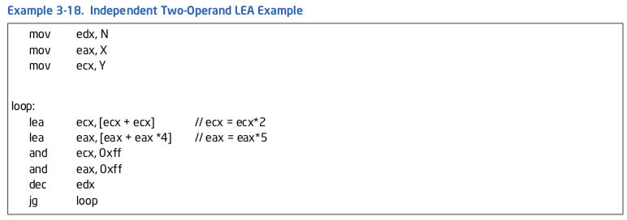
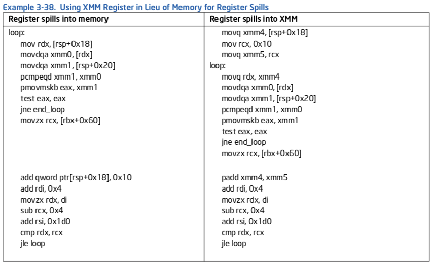
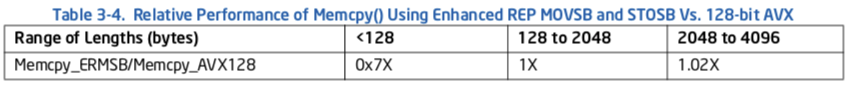

3 一般性优化原则¶
本文更新于 2018.12.01
参考: https://blog.csdn.net/wuhui_gdnt/article/details/79042412
格式说明:
- 重点, 需理解
- 次要重点
- 还未理解的内容
- zzq注解 批注,扩展阅读资料等
- note/warning等注解: 原文内的注解或自己添加的备忘信息
本章讨论可以提升运行在基于Intel微架构Haswell, IvyBridge, SandyBridge, Westmere, Nehalem, 增强Intel Core微架构与Intel Core微架构的处理器上应用程序性能的通用优化技术. 这些技术利用了在第2章”Intel 64 and IA-32 Processor Architectures””中描述的微架构. 关注多核处理器, 超线程技术与64位模式应用程序的优化指引在第8章“多核与超线程技术”, 第9章“64位模式编程指引”中描述.
优化性能的实践关注在3个领域:
- 代码生成的工具与技术.
- 工作负荷性能特征的分析, 以及它与微架构子系统的相互作用.
- 根据目标微架构(或微架构家族)调整代码以提升性能.
首先汇总工具使用的一些提示以简化前两个任务. 本章余下部分将关注在对目标微架构代码生成或代码调整的建议上. 本章解释了Intel C++编译器, Intel Fortran编译器及其他编译器的优化技术.
3.1 性能工具¶
Intel提供了几个工具来辅助优化应用程序性能, 包括编译器, 性能分析器以及多线程化工具.
3.1.1 Intel C++与Fortran编译器¶
Intel编译器支持多个操作系统(Windows*, Linux*, Mac OS*以及嵌入式).Intel编译器优化性能并向应用程序开发者提供对先进特性的访问:
面向32位或64位Intel处理器优化的灵活性.
兼容许多集成开发环境或第三方编译器.
利用目标处理器架构的自动优化特性.
减少对不同处理器编写不同代码的自动编译器优化.
支持跨Windows, Linux与Mas OS的通用编译器特性, 包括:
- 通用优化设置.
- 缓存管理特性.
- 进程间优化(Interprocedural optimization, IPO)的方法.
- 分析器指导的优化(profile-guided optimization, PGO)的方法.
- 多线程支持.
- 浮点算术浮点与一致性支持.
- 编译器优化与向量化报告.
3.1.2 一般编译器建议¶
总的来说, 对目标微架构调整好的编译器被期望能匹配或超出手动编码. 不过, 如果注意到了被编译代码的性能问题, 某些编译器(像Intel C++与Fortran编译器)允许程序员插入内置函数(intrinsics)或内联汇编对生成的代码加以控制.如果使用了内联汇编, 使用者必须核实生成的代码质量良好, 性能优先.
缺省的编译器选项定位于普通情形. 优化可能由编译器缺省做出, 如果它对大多数程序都有好处. 如果性能问题的根源是编译器部分一个差劲的选择, 使用不同的选项或以别的编译器编译器目标模块也许能解决问题.
3.1.3 VTune性能分析器¶
VTune使用性能监控硬件来收集你应用程序的统计数据与编码信息, 以及它与微架构的交互. 这允许软件工程师测量一个给定微架构工作负载的性能特征. VTune支持所有当前与以前的Intel处理器家族.
VTune性能分析器提供两种反馈:
- 由使用特定的编码建议或微架构特性所获得的性能提升的一个指示
- 以特定的指标而言, 程序中的改变提升还是恶化了性能的信息
VTune性能分析器还提供若干工作负载特征的测量, 包括:
- 作为工作负载中可获取指令级并行度指标的 吞吐率
- 作为缓存及内存层级重点指标的数据传输局部性
- 作为数据访问时延分摊(amortization)有效性指标的数据传输并行性
注解
在机器一部分中提升性能不一定对总体性能带来显著提升.提升某个特定指标的性能, 可能会降低总体性能.
在合适的地方, 在本章中的编程建议包括对VTune性能分析器事件的结果, 它提供了遵循建议所达成性能提升的可测量数据. 更多如何使用VTune分析器, 参考该应用程序的在线帮助.
3.2 处理器全景¶
许多编程建议从Intel Core微架构跨越到Haswell微架构都工作良好. 不过, 存在一个建议对某个微架构的好处超出其他微架构的情形. 其中一些建议是:
- 指令解码吞吐率是重要的.另外, 利用已解码ICache, 循环流检测器(Loop Stream Detector, LSD)以及宏融合(macro-fusion)可以进一步提升前端的性能
- 生成利用4个解码器, 并应用微融合(micro-fusion)与宏融合的代码, 使3个简单解码器中的每个都不受限于处理包含一个微操作(micro-op)的简单指令
- 在基于Sandy Bridge, IvyBridge及Haswell微架构的处理器上, 最优前端性能的代码大小与已解码ICache相关
- 寄存器部分写(partial register write)的依赖性可以导致不同程度的性能损失. 要避免来自寄存器部分更新的伪依赖性(false dependence), 使用完整的寄存器更新及扩展移动
- 使用合适的支持依赖性消除的指令(比如PXOR, SUB, XOR, XOPRS)
- 硬件预取通常可以减少数据与指令访问的实际内存时延. 不过不同的微架构可能要求某些定制的修改来适应每个微架构特定的硬件预取实现
3.2.1 CPUID发布策略与兼容代码策略¶
当希望在所有处理器世代上有最优性能时, 应用程序可以利用CPUID指令来识别处理器世代, 将处理器特定的指令集成到源代码中. Intel C++编译器支持对不同的目标处理器集成不同版本的代码. 在运行时执行哪些代码的选择在CPU识别符上做出. 面向不同处理器世代的二进制码可以在程序员或编译器的控制下生成.
zzq注解 和hyperscan中的fat runtime特性相似? 如何做到?
对面向多代微架构的应用程序, 最小的二进制代码大小以及单代码路径是重要的, 兼容代码策略是最好的. 使用为Intel Core微架构开发, 结合Intel微架构Nehalem的技术优化应用程序, 当运行在基于当前或将来Intel 64及IA-32世代的处理器上时, 有可能提升代码效率与可扩展性.
3.2.2 透明缓存参数策略¶
如果CPUID指令支持功能页(function leaf)4, 也称为确定性缓存参数页, 该页以确定性且前向兼容的方式报告缓存层级的每级缓存参数. 该页覆盖Intel 64与IA-32处理器家族.
对于依赖于缓存级(cache level)特定参数的编程技术, 使用确定性缓存参数允许软件以与未来Intel 64及IA-32处理器世代前向兼容, 且与缓存大小不同的处理器相互兼容的方式实现技术.
3.2.3 线程化策略与硬件多线程支持¶
Intel 64与IA-32处理器家族以两个形式提供硬件多线程支持: 双核技术与HT技术.
为了完全发挥在当前及将来世代的Intel 64与IA-32处理器中硬件多线程的性能潜力, 软件必须在应用程序设计中拥抱线程化的做法. 同时, 为应付最大范围的已安装机器, 多线程软件应该能够无故障地运行在没有硬件多线程支持的单处理器上, 并且在单个逻辑处理器上达成的性能应该与非线程的实现可相比较(如果这样的比较可以进行). 这通常要求将一个多线程应用程序设计为最小化线程同步的开销.关于多线程的额外指引在第8章“多核与超线程技术”中讨论.
3.3 编程规则, 建议及调整提示¶
本节包括规则, 建议与提示, 面向的工程师是:
- 修改源代码来改进性能(user/source规则)
- 编写汇编器或编译器(assembly/compiler规则)
- 进行详细的性能调优(调优建议)
编程建议使用两个尺度进行重要性分级:
- 局部影响(高, 中或低)指一个建议对给定代码实例性能的影响
- 普遍性(Generality)(高, 中或低)衡量在所有应用程序领域里这些实例的发生次数. 普遍性也可认为是“频率”
这些建议是大概的. 它们会依赖于编程风格, 应用程序域, 以及其他因素而变化.
高, 中与低(H, M与L)属性的目的是给出, 如果实现一个建议, 可以预期的性能提升的相对程度.
因为预测应用程序中一段特定代码是不可能的, 优先级提升不能直接与应用程序级性能提升相关. 在观察到应用程序级性能提升的情形下, 我们提供了该增益的定量描述(仅供参考). 在影响被认为不适用的情形下, 不分配优先级.
3.4 优化前端¶
优化前端包括两个方面:
- 维持对执行引擎稳定的微操作供应 — 误预测分支会干扰微操作流, 或导致执行引擎在非构建代码路径(non-architectedcode path)中的微操作流上浪费执行资源. 大多数这方面的调整集中在分支预测单元. 常见的技术在3.4.1节”分支预测优化”中讨论.
- 供应微操作流尽可能利用执行带宽与回收带宽 — 对于Intel Core微架构与Intel Core Duo处理器家族, 这方面集中在维持高的解码吞吐率. 在Sandy Bridge中, 这方面集中在从已解码ICache保持热代码(hod code?)运行. 最大化Intel Core微架构解码吞吐率的技术在3.4.2节”取指与解码优化”中讨论.
3.4.1 分支预测优化¶
分支优化对性能有重要的影响. 通过理解分支流并改进其可预测性, 可以显著提升代码的速度.
有助于分支预测的优化有:
- 将代码与数据保持在不同的页面.这非常重要；更多信息参考3.6节“优化内存访问”
- 尽可能消除分支
- 将代码安排得与静态分支预测算法一致
- 在自旋等待循环(spin-wait loop)中使用PAUSE指令
- 内联函数, 并使调用与返回成对
- 在需要时循环展开, 使重复执行的循环的迭代次数不多于16(除非这会导致代码的大小过度增长)
- 避免在一个循环里放置两条条件分支指令, 使得两者都有相同的目标地址, 并且同时属于(即包含它们最后字节地址在内)同一个16字节对齐的代码块
3.4.1.1 消除分支¶
消除分支提高了性能, 因为:
- 它减少了误预测的可能性
- 它减少了所要求的分支目标缓冲(Branch Target Buffer, BTB)项. 永远不会被采用的条件分支不消耗BTB资源.
消除分支有4个主要的方法:
- 安排代码使得基本块连续
- 展开循环, 就像3.4.1.7节”循环展开”讨论的那样
- 使用CMOV指令
- 使用SETCC指令
zzq注解 CMOV是条件MOV
以下规则适用于分支消除:
Assembly/Compiler编程规则1.(影响MH, 普遍性M) 安排代码使基本块连续, 并消除不必要的分支.
Assembly/Compiler编程规则2.(影响M, 普遍性ML) 使用SETCC及CMOV指令来尽可能消除不可预测条件分支. 对可预测分支不要这样做. 不要使用这些指令消除所有的不可预测条件分支(因为归咎于要求执行1个条件分支两条路径的要求, 使用这些指令将导致执行开销). 另外, 将一个条件分支转换为SETCC或CMOV是以控制流依赖交换数据依赖, 限制了乱序引擎的能力. 在调优时, 注意到所有的Intel 64与IA-32处理器通常具有非常高的分支预测率. 始终被误预测的分支通常很少见. 仅当增加的计算时间比一个误预测分支的预期代价要少, 才使用这些指令.
考虑一行条件依赖于其中一个常量的C代码:
X = (A < B) ? CONST1: CONST2;
代码有条件地比较两个值A和B.如果条件成立, 设置X为CONST1；否则设置为CONST2. 一个等效于上面C代码的汇编代码序列可以包含不可预测分支, 如果在这两个值中没有相关性.
例子3-1显示了带有不可预测分支的汇编代码. 不可预测分支可以通过使用SETCC指令移除. 例子3-2显示了没有分支的优化代码.
例子3-1. 带有一个不可预测分支的汇编代码:
cmp a, b ; Condition
jae L30 ; Conditional branch
mov ebx const1 ; ebx holds X
jmp L31 ; Unconditional branch
L30:
mov ebx, const2
L31:
例子3-2. 消除分支的优化代码:
xor ebx, ebx ; Clear ebx (X in the C code)
cmp A, B
setge bl ; When ebx = 0 or 1
; OR the complement condition
sub ebx, 1 ; ebx=11...11 or 00...00
and ebx, CONST3 ; CONST3 = CONST1-CONST2
add ebx, CONST2 ; ebx=CONST1 or CONST2
例子3-2中的优化代码将EBX设为0, 然后比较A和B.如果A不小于B, EBX被设为1. 然后递减EBX, 并与常量值的差进行AND. 这将EBX设置为0或值的差.通过将CONST2加回EBX, 正确的值写入EBX.在CONST2等于0时, 可以删除最后一条指令.
zzq注解 分析:
// setge后
if(A < B)
ebx = 0
ebx-1 = 11..11
ebx & (const1-const2) = const1-const2
ebx+const2 = const1
else
ebx = 1
ebx-1 = 00..00
ebx & (const1-const2) = 0
ebx+const2 = const2
删除分支的另一个方法是使用CMOV及FCMOV指令. 例子3-3显示了如何使用CMOV修改一个TEST及分支指令序列, 消除一个分支. 如果这个TEST设置了相等标记, EBX中的值将被移到EAX. 这个分支是数据依赖的, 是一个典型的不可预测分支.
例子3-3. 使用CMOV指令消除分支:
test ecx, 3
jne next_block
mov eax, ebx
next_block:
; To optimize code, combine jne and mov into one cmovcc instruction
; that checks the equal flag
test ecx, 3 ; Test the flags
cmove eax, ebx ; If the equal flag is set, move
; ebx to eax- the 1H: tag no longer needed
zzq注解 对应的C代码:
if(ecx == 3)
eax = eab;
3.4.1.2 spin-wait和idle loop¶
Pentium 4处理器引入了一条新的PAUSE指令；在Intel 64与IA-32处理器实现中, 在架构上, 这个指令是一个NOP.
对于Pentium 4与后续处理器, 这条指令作为代码序列是spin-wait循环的提示. 在这样的循环里没有一条PAUSE指令, 在退出这个循环时, Pentium 4处理器可能遭遇严重的性能损失, 因为处理器可能检测到一个可能的内存次序违例(memory order violation). 插入PAUSE指令显著降低了内存次序违例的可能性, 结果提升了性能.
在例子3-4中, 代码自旋直到内存位置A匹配保存在寄存器EAX的值. 在保护临界区时, 在生产者-消费者序列中, 这样的代码序列通常用于屏障(barrier)或其他同步.
例子3-4. PAUSE指令的使用:
lock: cmp eax, a
jne loop
; Code in critical section:
loop: pause
cmp eax, a
jne loop
jmp lock
3.4.1.3 静态预测¶
在BTB中没有历史的分支(参考3.4.1节“分支预测优化”)使用一个静态预测算法来预测:
- 预测无条件分支将被采用
- 预测间接分支将不被采用
下面规则适用于静态消除:
Assembly/Compiler编程规则3.(影响M, 普遍性H) 安排代码与静态分支预测算法一致: 使紧跟条件分支的fall-through代码成为带有前向目标分支的likely目标, 或使其成为带有后向目标分支的unlikely目标.
例子3-5展示了静态分支预测算法. 一个IF-THEN条件的主体被预测.
例子3-5. 静态分支预测算法:
// Forward condition branches not taken (fall through)
IF<condition> {....
↓
}
IF<condition> {...
↓
}
// Backward conditional branches are taken
LOOP {...
↑ −− }<condition>
// Unconditional branches taken
JMP
------>
zzq注解 fall-through就是像switch/case语句里的default那样的情况
例3-6与例3-7提供了用于静态预测算法的基本规则. 在例子3-6中, 后向分支(jc Begin) 第一次通过时不在BTB里；因此, BTB不会发布一个预测. 不过, 静态预测器预测该分支将被采用, 因此不会发生误预测.
例子3-6. 静态的采用预测:
Begin: mov eax, mem32
and eax, ebx
imul eax, edx
shld eax, 7
jc Begin
在例子3-7中第一个分支指令(jc Begin)是一个条件前向分支. 在第一次通过时它不在BTB里, 但静态预测器将预测这个分支将fall through. 静态预测算法正确地预测call Convert指令将被采用, 即使在该分支在BTB中拥有任何分支历史之前.
例子3-7. 静态的不采用预测
mov eax, mem32
and eax, ebx
imul eax, edx
shld eax, 7
jc Begin
mov eax, 0
Begin: call Convert
Intel Core微架构不使用静态预测启发式. 不过, 为了维持Intel 64与IA-32处理器间的一致性, 软件应该缺省维护这个静态预测启发式.
3.4.1.4. 内联, 调用与返回¶
返回地址栈机制(return address stack mechanism)扩充了静态与动态预测器来特别地优化调用与返回. 它有16项, 足以覆盖大多数程序的调用深度. 如果存在一条一连串超过16个嵌套调用与返回的链, 性能可能会恶化.
在Intel NetBurst微架构中追踪缓存(Trace Cache)为调用与返回维护分支预测信息. 只要调用或返回的追踪维持在追踪缓存里, 调用与返回目标维持不变, 上面描述的返回地址栈的深度限制将不会妨碍性能.
要启用返回栈机制, 调用与返回必须成对匹配. 如果这完成了, 以一个影响性能的方式超出栈深度的可能性非常低.
下面规则适用于内联, 调用及返回:
Assembly/Compiler编程规则4.(影响MH, 普遍性MH) 近程调用(near call)必须与近程返回匹配, 而远程调用(far call)必须与远程返回匹配. 将返回地址压栈并跳转到被调用的例程是不建议的, 因为它创建了调用与返回的一个失配.
调用与返回是高代价的；出于以下原因使用内联:
- 可消除参数传递开销
- 在编译器中, 内联函数可带来更多优化机会
- 如果被内联的例程包含分支, 调用者额外的上下文可以提高例程内分支预测
- 在小函数里, 如果该函数被内联了, 一个误预测分支导致的性能损失更小
Assembly/Compiler编程规则5.(影响MH, 普遍性MH) 选择性内联一个函数, 如果这样做会降低代码大小, 或者如果这是小函数且该调用点经常被执行.
Assembly/Compiler编程规则6.(影响H, 普遍性H) 不要内联函数, 如果这样做会使工作集大小超出可以放入追踪缓存的程度.
Assembly/Compiler编程规则7.(影响ML, 普遍性ML) 如果存在一连串超过16个嵌套调用与返回；考虑使用内联改变程序以减少调用深度.
Assembly/Compiler编程规则8.(影响ML, 普遍性ML) 倾向内联包含低预测率分支的小函数. 如果分支误预测导致RETURN被过早预测为被采用, 可能会导致性能损失.
Assembly/Compiler编程规则9.(影响L, 普遍性L) 如果函数最后的语句是对另一个函数的调用, 考虑将该调用转换为跳转(jump). 这将节省该调用/返回开销和return stack buffer中的项目.
Assembly/Compiler编程规则10.(影响M, 普遍性L) 不要在一个16字节块里放4个以上分支.
Assembly/Compiler编程规则11.(影响M, 普遍性L) 不要在一个16字节块里放2个以上循环结束分支(end loop branch).
3.4.1.5 代码对齐¶
小心安排代码可以提高缓存与内存的局部性. 可能(被预测执行的?)的基本块序列应在内存里连续放置. 这可能涉及从该序列移除不可能(被执行的)的代码, 比如处理错误条件的代码. 参考3.7节“预取”, 关于优化指令预取器的部分.
Assembly/Compiler编程规则12.(影响M, 普遍性H) When executing code from the DSB(Decoded Icache), direct branches that are mostly taken should have all their instruction bytes in a 64B cache line and nearer the end of that cache line. Their targets should be at or near the beginning of a 64B cache line.
When executing code from the legacy decode pipeline, direct branches that are mostly taken should have all their instruction bytes in a 16B aligned chunk of memory and nearer the end of that 16B aligned chunk. Their targets should be at or near the beginning of a 16B aligned chunk of memory.
Assembly/Compiler编程规则13.(影响M, 普遍性H) 如果一块条件代码不太可能执行, 它应该被放在程序的另一个部分. 如果它非常可能不执行, 而且代码局部性是个问题, 它应该被放在不同的代码页.
3.4.1.6 分支类型选择¶
间接分支与调用的缺省预测目标是fall-through路径. 当该分支有可用的硬件预测时, fall-through预测会被覆盖. 对一个间接分支, 分支预测硬件的预测分支目标是之前执行的分支目标.
归咎于不良的代码局部性或病态的分支冲突问题, 如果没有分支预测可用, fall-through路径的缺省预测才是一个大问题. 对于间接调用, 预测fall-through路径通常不是问题, 因为, 执行将可能回到相关返回之后的指令.
在间接分支后立即放置数据会导致性能问题. 如果该数据是全0, 它看起来像一长串对内存目的地址的ADD, 这会导致资源冲突并减慢分支恢复.类似, 紧跟间接分支的数据对分支预测硬件看起来可能像分支, 会造成跳转执行其他数据页. 这会导致后续的自修改(self-modifying)代码问题.
Assembly/Compiler编程规则14.(影响M, 普遍性L) 在出现间接分支时, 尝试使一个间接分支最有可能的目标紧跟在该间接分支后. 或者, 如果间接分支是普遍的, 但它们不能由分支预测硬件预测, 以一条UD2指令根在间接分支后, 它将阻止处理器顺着fall-through路径解码.
从代码构造(比如switch语句, 计算的GOTO(computed GOTO)或通过指针的调用)导致的间接分支可以跳转到任意数目的位置. 如果代码序列是这样的, 大多数时间一个分支的目标是相同的地址, 那么BTB在大多数时间将预测准确. 因为仅被采用(非fall-through)目标会保存在BTB里, 带有多个被采用目标的间接分支会有更低的预测率.
通过引入额外的条件分支, 所保存目标的实际数目可以被增加. 向一个目标添加一个条件分支是有成效的, 如果:
- 分支目标(direction)与导致该分支的分支历史有关；也就是说, 不仅是最后的目标, 还有如何来到这个分支
- 源/目标对足够常见, 值得使用额外的分支预测能力.这可能增加总体的分支误预测数, 同时改进间接分支的误预测.如果误预测分支数目非常大, 收益率下降
User/Source编程规则1.(影响M, 普遍性L) 如果间接分支具有2个以上经常采用的目标, 并且其中至少一个是与分支历史有关, 那么将该间接分支转换为一棵树, 其中在一个或多个间接分支之前是这些目标的条件分支.对与分支历史有关的间接分支的常用目标应用这个“剥离”.
这个规则的目的是通过提升分支的可预测性(即使以添加更多分支为代价)来减少误预测的总数. 添加的分支必须是可预测的. 这样可预测性的一个原因是与前面分支历史的强关联. 也就是说, 前面分支采取的目标是考虑中分支目标的良好指示.
例子3-8显示了一个间接分支目标与前面的一个条件分支目标相关的简单例子.
例子3-8. 带有两个倾向目标的间接分支:
function ()
{
int n = rand(); // random integer 0 to RAND_MAX
if ( ! (n & 0x01) ) { // n will be 0 half the times
n = 0; // updates branch history to predict taken
}
// indirect branches with multiple taken targets
// may have lower prediction rates
switch (n) {
case 0: handle_0(); break; // common target, correlated with
// branch history that is forward taken
case 1: handle_1(); break; // uncommon
case 3: handle_3(); break; // uncommon
default: handle_other(); // common target
}
}
很难通过分析确定相关性, 对于编译器及汇编语言程序员. 评估剥离以及不剥离时的性能, 从一个编程工作得到最好的性能, 可能是富有成效的.
以相关分支历史剥离一个间接分支的最受青睐目标的一个例子显示在例子3-9中.
例子3-9. 降低间接分支误预测的一个剥离技术:
function ()
{
int n = rand(); // Random integer 0 to RAND_MAX
if( ! (n & 0x01) ) THEN
n = 0; // n will be 0 half the times
if (!n) THEN
handle_0(); // Peel out the most common target
// with correlated branch history
else {
switch (n) {
case 1: handle_1(); break; // Uncommon
case 3: handle_3(); break; // Uncommon
default: handle_other(); // Make the favored target in
// the fall-through path
}
}
}
3.4.1.7 循环展开¶
展开循环的好处有:
- 展开分摊了分支的开销, 因为它消除了分支以及一部分管理induction variable的代码
- 展开允许主动地调度(或流水线化)该循环以隐藏时延. 随着依赖链延伸展露出关键路径, 如果你有足够的空闲寄存器来保存变量的生命期, 这是有用的
- 展开向其他优化手段展露出代码, 比如移除重复的load, 公共子表达式消除等
zzq注解 Induction variable:
In computer science, an induction variable is a variable that gets increased
or decreased by a fixed amount on every iteration of a loop, or is a linear
function of another induction variable.For example, in the following loop,
i and j are induction variables:
循环展开的潜在代价是:
- 过度展开或展开非常大的循环会导致代码尺寸增加. 如果展开后循环不再能够放入Trace Cache(TC), 这是有害的
- 展开包含分支的循环增加了对BTB容量的需求. 如果展开后循环的迭代次数是16或更少, 分支预测器应该能够正确地预测在方向更迭(alternate direction)的循环体中的分支
Assembly/Compiler编程规则15.(影响H, 普遍性M) 展开小的循环, 直到分支与归纳变量的开销占据(通常)不到10%的循环执行时间.
Assembly/Compiler编程规则16.(影响H, 普遍性M) 避免过度展开循环；这可能冲击(thrash)追踪缓存或指令缓存.
Assembly/Compiler编程规则17.(影响M, 普遍性M) 展开经常执行且有可预测迭代次数的循环, 将迭代次数降到16以下, 包括16. 除非它增加了代码大小, 使得工作集不再能放入追踪或指令缓存. 如果循环体包含多个条件分支, 那么展开使得迭代次数是16/(条件分支数).
例子3-10显示了循环展开如何使得其他优化成为可能.
例子3-10. 循环展开
// 展开前:
do i = 1, 100
if ( i mod 2 == 0 ) then a( i ) = x
else a( i ) = y
enddo
// 展开后:
do i = 1, 100, 2
a( i ) = y
a( i+1 ) = x
enddo
在这个例子中, 循环执行100次将X赋给每个偶数元素, 将Y赋给每个奇数元素. 通过展开循环, 你可以更高效地进行赋值, 在循环体内移除了一个分支.
3.4.1.8 分支预测的编译器支持¶
编译器能为Intel处理器生成提高分支预测效率的代码. Intel C++编译器采取的手段包括:
- 将代码与数据保持在不同的页
- 使用条件移动指令来消除分支
- 生成与静态分支预测算法一致的代码
- 在合适的地方进行内联
- 如果迭代次数可预测, 展开循环
使用分析器指导优化(PGO), 编译器可以布置基本块, 消除一个函数最频繁执行路径上的分支, 或至少提高它们的可预测性. 在源代码级别, 无需担心分支预测. 更多信息, 参考Intel C++编译器文档.
3.4.2 取指与解码优化¶
Intel Core微架构提供了几个机制来增加前端吞吐量. 利用这些特性的技术在下文中讨论.
3.4.2.1 对微融合(micro-fusion)的优化¶
操作寄存器和内存操作数的指令解码得到的微操作比对应的”寄存器-寄存器”版本要多. 使用”寄存器-寄存器”版本替换前者指令等效的工作通常要求一个2条指令的序列. 这个序列很可能导致取指带宽的降低.
Assembly/Compiler编程规则18.(影响ML, 普遍性M) 要提高取指/解码吞吐率, 优先使用内存风格而非仅寄存器风格的指令, 如果该指令可从微融合中受益的话.
下面例子是可以由所有的解码器处理的某些微融合类型:
所有对内存的写, 包括写立即数. 在内部写执行两个独立的微操作: 写地址(store-address) 与写数据(store-data).
所有在寄存器与内存间进行“read-modify”(load+op)的指令, 例如:
ADDPS XMM9, OWORD PTR[RSP+40] FADD DOUBLE PTR [RDI+RSI*8] XOR RAX, QWORD PTR [RBP+32]
所有形式为“读且跳转”的指令, 例如:
JMP [RDI+200] RET
带有立即操作数与内存操作数的CMP与TEST.
带有RIP相对取址的Intel 64指令, 在以下情形中不会被微融合:
在需要一个额外的立即数时, 例如:
CMP [RIP+400], 27 MOV [RIP+3000], 142
当需要一个RIP用于控制流目的时, 例如:
JMP [RIP+5000000]
在这些情形里, Intel Core微架构以及Intel微架构Sandy Bridge从解码器0提供一个2微操作的流, 导致了解码带宽是轻微损失, 因为2微操作的流必须从与之匹配(it was aligned with)的解码器前进到解码器0.
在访问全局数据时, RIP取址是常见的. 因为它不能从微融合获益, 编译器可能考虑以其他内存取址方式访问全局数据.
3.4.2.2 对宏融合(macro-fusion)的优化¶
宏融合将两条指令合并为一个微操作. Intel Core微架构在有限的情形会完成这种硬件优化.
宏融合对的第一条指令必须是一条CMP或TEST指令. 这条指令可以是REG-REG, REG-IMM, 或是一个微融合的REG-MEM比较. 第二条指令(在指令流中相邻)应该是一个条件分支.
因为这些对在基本的迭代式编程序列中是常见的, 即使在非重新编译的二进制代码中宏融合也能提高性能. 所有的解码器每周期可以解码一个宏融合对, 连同最多3条其他指令, 形成每周期5条指令的解码带宽峰值.
每条宏融合后指令使用单个分发执行. 这个过程降低了时延, 因为从分支误预测的损失中移除了一个周期. 软件还可以获得其他的融合好处: 增加rename与retire带宽, 储存更多正在进行的(in-flight)指令, 或从更少比特表示更多工作中带来能耗降低.
下面的列表给出你何时可以使用宏融合的细节:
在进行比较时, CMP或TEST可以被融合:
REG-REG. 例如: CMP EAX,ECX; JZ label REG-IMM. 例如: CMP EAX,0x80; JZ label REG-MEM. 例如: CMP EAX,[ECX]; JZ label MEM-REG. 例如: CMP [EAX],ECX; JZ label
使用所有条件跳转的TEST可以被融合.
在Intel Core微架构中, 仅使用以下条件跳转的CMP可以被融合.这些条件跳转检查进位标记 (CF)或零标记(ZF).能够进行宏融合的条件跳转是:
JA或JNBE JAE或JNB或JNC JE或JZ JNA或JBE JNAE或JC or JB JNE或JNZ
在比较MEM-IMM时(比如CMP [EAX], 0X80; JZ label), CMP与TEST不能被融合. Intel Core微架构在64位模式中不支持宏融合.
Intel微架构Nehalem在宏融合中支持以下增强:
带有以下条件跳转的CMP可以被融合(在Intel Core微架构中不支持):
JL或JNGE JGE或JNL JLE或JNG JG或JNLE
在64位模式在支持宏融合.
在Intel微架构Sandy Bridge中增强的宏融合支持总结在表3-1中, 在2.3.2.1节与例子3-15中有额外的信息.
表3-1. 在Intel微架构Sandy Bridge中可宏融合指令
| 指令 | TEST | AND | CMP | ADD | SUB | INC | DEC |
|---|---|---|---|---|---|---|---|
| JO/JNO | Y | Y | N | N | N | N | N |
| JC/JB/JAE/JNB | Y | Y | Y | Y | Y | N | N |
| JE/JZ/JNE/JNZ | Y | Y | Y | Y | Y | Y | Y |
| JNA/JBE/JA/JNBE | Y | Y | Y | Y | Y | N | N |
| JS/JNS/JP/JPE/JNP/JPO | Y | Y | N | N | N | N | N |
| JL/JNGE/JGE/JNL/JLE/JNG/JG/JNLE | Y | Y | Y | Y | Y | Y | Y |
Assembly/Compiler编程规则19.(影响M, 普遍性ML) 尽可能应用宏融合, 使用支持宏融合的指令对. 如果可能优先使用TEST. 在可能时使用 无符号 变量以及 无符号
跳转. 尝试逻辑化地验证一个变量在比较时刻是非负的. 在可能时避免MEM-IMM形式的CMP或TEST. 不过, 不要添加任何指令来避免使用MEM-IMM形式的指令.
例子3-11. 宏融合, 无符号迭代计数
注:
- 有符号迭代子抵制了macro-fusion
- 无符号迭代子兼容macro-fusion
- CMP MEM-IMM, JGE 抑制 macro-fusion.
- CMP REG-IMM, JAE 允许 macro-fusion.
例子3-12. 宏融合, if语句
注:
- 有符号迭代子抵制了macro-fusion
- 无符号迭代子兼容macro-fusion
- CMP MEM-IMM, JGE 抑制 macro-fusion.
Assembly/Compiler编程规则20.(影响M, 普遍性ML) 当可以在逻辑上确定一个变量在比较时刻是非负的, 软件可以启用宏融合；在比较一个变量与0时, 适当地使用TEST来启用宏融合.
例子3-13. 宏融合, 有符号变量

对于有符号或无符号变量“a”；就标志位(flags)而言, “CMP a, 0”与“TEST a, a”产生相同的结果. 因为TEST更容易宏融合, 为了启用宏融合, 软件可以使用“TEST a, a”替换“CMP a, 0”.
例子3-14. 宏融合, 有符号比较
Intel微架构Sandy Bridge使更多使用条件分支的算术与逻辑指令能宏融合. 在循环中在ALU端口已经拥塞的地方, 执行其中一个宏融合可以缓解压力, 因为宏融合指令仅消耗端口5, 而不是一个ALU端口加上端口5.
在例子3-15中, 循环“add/cmp/jnz”包含了两个可以通过端口0,1,5分发的ALU指令. 因此端口5绑定其中一条ALU指令的可能性更高, 导致JNZ等一个周期. 循环“sub/jnz”, ADD/SUB/JNZ可以在同一个周期里分发的可能性增加了, 因为仅SUB可绑定到端口0, 1, 5.
例子3-15. 在Intel微架构Sandy Bridge中额外的宏融合好处
3.4.2.3 长度改变前缀(Length-Changing Prefixes: LCP)¶
一条指令的长度最多可以是15个字节. 某些前缀可以动态地改变解码器所知道的一条指令的长度. 通常, 预解码单元将假定没有LCP, 估计指令流中一条指令的长度. 当预解码器在取指行中遇到一个LCP时, 它必须使用一个更慢的长度解码算法. 使用这个更慢的解码算法, 预解码器在6个周期里解码取指行, 而不是通常的1周期. 机器流水线正常排队吞吐率通常不能隐藏LCP带来的性能损失.
可以动态改变一条指令长度的前缀包括:
- 操作数大小前缀(0x66)
- 地址大小前缀(0x67)
在基于Intel Core微架构的处理器以及在Intel Core Duo与Intel Core Solo处理器中, 指令MOV DX, 01234h受制于LCP暂停(stall). 包含imm16作为固定编码部分, 但不需要LCP来改变这个立即数大小的指令不受LCP暂停的影响. 在64位模式中, REX前缀(4xh)可以改变两类指令的大小, 但不会导致一个LCP性能损失.
如果在一个紧凑的循环中发生LCP暂停, 它会导致显著的性能下降.当解码不受一个瓶颈时, 就像在有大量浮点的代码中, 孤立的LCP暂停通常不会造成性能下降.
Assembly/Compiler编程规则21.(影响MH, 普遍性MH) 倾向生成使用imm8或imm32值, 而不是imm16值的代码.
如果需要imm16, 将相同的imm32读入一个寄存器并使用寄存器中字的值.
两次LCP暂停
受制于LCP暂停且跨越一条16字节取指行边界的指令会导致LCP暂停被触发两次. 以下对齐情况会触发两次LCP暂停:
- 使用一个MODR/M与SIB字节编码的一条指令, 且取指行边界在MODR/M与SIB字节之间.
- 使用寄存器与立即数字节偏移取址模式访问内存, 从取指行偏移13处开始的一条指令.
第一次暂停是对第一个取指行, 第二次暂停是对第二个取指行.两次LCP暂停导致一个11周期的解码性能损失.
下面的例子导致LCP暂停一次, 不管指令第一个字节在取指行的位置:
ADD word ptr [EDX], 01234H
ADD word ptr 012345678H[EDX], 01234H
ADD word ptr [012345678H], 01234H
以下指令在取指行偏移13处开始时, 导致两次LCP暂停:
ADD word ptr [EDX+ESI], 01234H
ADD word ptr 012H[EDX], 01234H
ADD word ptr 012345678H[EDX+ESI], 01234H
为了避免两次LCP暂停, 不要使用受制于LCP暂停, 使用SIB字节编码或字节位移取址 (byte displacement)模式的指令.
伪LCP暂停(False LCP Stall)
伪LCP暂停具有与LCP暂停相同的特征, 但发生在没有任何imm16值的指令上.
当(a)带有LCP、使用F7操作码编码的指令, (b)位于取指行的偏移14处时, 发生伪LCP暂停. 这些指令是: not, neg, div, idiv, mul与imul. 伪LCP造成时延, 因为在下一个取指行之前指令长度解码器不能确定指令的长度, 这个取指行持有在指令MODR/M字节中的实际操作码.
以下技术可以辅助避免伪LCP暂停:
- 将F7指令组的所有短操作提升为长操作, 使用完整的32不比特版本.
- 确保F7操作码不出现在取指行的偏移14处.
Assembly/Compiler编程规则22.(影响M, 普遍性ML) 确保使用0xF7操作码字节的指令不在取指行的偏移4处开始；避免使用这些指令操作16位数据, 将短数据提升为32位.
例子3-16. 避免伴随0xF7指令组的伪LCP暂停
3.4.2.4 优化循环流检测器(LSD)¶
在Intel Core微架构中, 满足以下准则的循环由LSD检测, 并从指令队列重播(replay)来供给解码器.
- 必须不超过4个16字节的取指
- 必须不超过18条指令
- 可以包含不超过4被采用的分支, 并且它们不能是RET
- 通常应该具有超过64个迭代
在Intel微架构Nehalem中, 这样改进循环流寄存器:
- 在指令已解码队列(IDQ, 参考2.5.2节)中缓冲已解码微操作来供给重命名/分配阶段
- LSD的大小被增加到28个微操作
在Sandy Bridge与Haswell微架构中, LSD与微操作队列实现持续改进.它们具有如下特性:
表3-2. 由Sandy Bridge与Haswell微架构检测的小循环准则
许多计算密集循环, 搜索以及字符串移动符合这些特征. 这些循环超出了BPU预测能力, 总是导致一个分支误预测.
Assembly/Compiler编程规则23.(影响MH, 普遍性MH) 将长指令序列的循环分解为不超过LSD大小的短指令块的循环.
Assembly/Compiler编程规则24.(影响MH, 普遍性M) 如果展开后的块超过LSD的大小, 避免展开包含LCP暂停的循环.
3.4.2.5 在Intel Sandy Bridge中利用LSD微操作发布带宽¶
LSD持有构成小的“无限”循环的微操作. 来自LSD的微操作在乱序引擎中分配. 在LSD中的循环以一个回到循环开头的被采用分支结束. 在循环末尾的被采用分支总是在该周期中最后分配的微操作. 在循环开头的指令总是在下一个周期分配. 如果代码性能受限于前端带宽, 未使用的分配槽造成分配中的一个空泡, 并导致性能下降.
在Intel微架构Sandy Bridge中, 分配带宽是每周期4个微操作. 当LSD中的微操作数导致最少未使用分配槽时, 性能是最好的. 你可以使用循环展开来控制在LSD中的微操作数.
在例子3-17里, 代码对所有的数组元素求和.原始的代码每次迭代加一个元素. 每次迭代有3个微操作, 都在一个周期中分配.代码的吞吐率是每周期一个读.
在展开循环一次时, 每次迭代有5个微操作, 它们在2个周期中分配. 代码的吞吐率仍然是每周期一个读.因此没有性能提高.
在展开循环两次时, 每次迭代有7个微操作, 仍然在2个周期中分配. 因为在每个周期中可以执行两个读, 这个代码具有每两个周期3个读操作的潜在吞吐率.
例子3-17. 在LSD中展开循环优化发布带宽
3.4.2.6 为已解码ICache优化¶
已解码ICache是Intel微架构Sandy Bridge的一个新特性. 从已解码ICache运行代码有两个好处:
- 以更高的带宽为乱序引擎提供微操作
- 前端不需要解码在已解码ICache中的代码.这节省了能源
zzq注解 这里说已解码ICache应指的是前端里的Trace Cache.
在已解码ICache与legacy解码流水线间切换需要开销. 如果你的代码频繁地在前端与已解码ICache间切换, 性能损失会超过仅从遗留流水线运行.
要确保”热”代码从已解码ICache供给:
- 确保每块热代码少于500条指令.特别地, 在一个循环中不要展开超过500条指令. 这应该会激活已解码ICache存留, 即使启用了超线程.
- 对于在一个循环中有非常大块计算的应用程序, 考虑循环分解(loop-fission): 将循环分解为适合已解码ICache(大小)的多个循环, 而不是会溢出的单个循环.
- 如果程序可以确定每核仅运行一个线程, 它可以将热代码块大小增加到大约1000条指令.
密集的读-修改-写代码(dense read-modify-write code)
已解码ICache对每32字节对齐内存块仅可以保持最多18个微操作. 因此, 以少量字节编码, 但有许多微操作的指令高度集中的代码, 可能超过18个微操作的限制, 不能进入已解码ICache. 读-修改-写(RMW)指令是这样指令的一个良好例子.
RMW指令接受一个内存源操作数, 一个寄存器源操作数, 并使用内存源操作数作为目标. 相同的功能可以两到三条指令实现: 第一条读内存源操作数, 第二条使用第二个寄存器源操作数执行该操作, 最后的指令将结果写回内存. 这些指令通常导致相同数量的微操作, 但使用更多的字节来编码相同的功能.
一个可以广泛使用RMW指令的情形是当编译器积极地优化代码大小时.
下面是将热代码放入已解码ICache的某些可能解决方案:
- 以2到3条功能相同的指令替换RMW指令. 例如, “adc [rdi], rcx”只有3字节长；等效的序列“adc rax, [rdi]”+“mov [rdi], rax”是6个字节
- 对齐代码, 使密集部分被分开到两个32字节块. 在使用自动对齐代码的工具时, 这个解决方案是有用的, 并且不关心代码改变
- 通过在循环中添加多字节NOP展开代码. 注意这个解决方案对执行添加了微操作
为已解码ICache对齐无条件分支
对于进入已解码ICache的代码, 每个无条件分支是占据一个已解码ICache通道(way)的最后微操作. 因此, 每32字节对齐块仅3个无条件分支可以进入已解码ICache.
在跳转表与switch声明中无条件分支是频繁的. 下面是这些构造的例子, 以编写它们的方法, 使它们可以放入已解码ICache.
编译器为C++虚拟函数或DLL分发表创建跳转表. 每个无条件分支消耗5字节；因此最多7个无条件分支可与一个32字节块关联. 这样, 如果在每个32字节对齐块中无条件分支太密集, 跳转表可能不能放入已解码ICache. 这会导致在分支表前后执行的代码的性能下降.
解决方案是在分支表的分支中添加多个字节NOP指令. 这可能会增加代码大小, 小心使用. 不过, 这些NOP不会执行, 因此在后面的流水线阶段中不会有性能损失.
Switch-case构造代表了一个类似的情形. 每个case条件的求值导致一个无条件分支. 在放入一个对齐32字节块的每3条连续无条件分支上可以应用相同的多字节NOP方法.
在一个已解码ICache通道中的两个分支
已解码ICache可以在一个通道内保持两个分支. 在32字节对齐块中的密集分支, 或它们与其他指令的次序, 可能阻止该块中指令所有的微操作进入已解码ICache. 这不经常发生. 当它发生时, 你可以在代码合适的地方放置NOP指令. 要确保这些NOP指令表示热代码的部分.
Assembly/Compiler编程规则25.(影响M, 普遍性M) 避免在一个栈操作序列(POP, PUSH, CALL, RET)中放入对ESP的显式引用.
3.4.2.7 其他解码指引¶
Assembly/Compiler编程规则26.(影响ML, 普遍性L) 使用小于8字节长度的简单指令.
Assembly/Compiler编程规则27.(影响M, 普遍性MH) 避免使用改变立即数大小及位移 (displacement)的前缀.
长指令(超过7字节)会限制每周期解码指令数. 每个前缀增加指令长度1字节, 可能会限制解码器的吞吐率. 另外, 多前缀仅能由第一个解码器解码. 这些前缀也导致了解码时的时延. 如果不能避免改变立即数大小或位移的多前缀或一个前缀, 在因为其他原因暂停流水线的指令后调度它们.
3.5 优化Execution Core¶
现代处理器中的超标量(superscalar), 乱序执行包含多个执行硬件资源, 它可以并行地执行多条微指令. 这些资源通常保证微指令有效执行且时延固定. 利用并行度的一般指南是:
- 遵守3.4节中的规则, 最大化可用解码带宽和前端吞吐量. 这些规则包括有利的单micro-op指令和利用micro-fusion, 栈指针追踪器和macro-fusion
- 最大化rename带宽. 本节中讨论此项, 包括合理利用partial寄存器, ROB读端口以及对flags产生副作用的指令
- 在指令序列上调度recommendations以便多个依赖链同时存在于reservation station中, 这会保证你的代码利用最大的并行度
- 避免hazards, 最小化在执行核心中可能出现的时延, 让已分发的微指令快速地执行和回收
3.5.1 Instruction Selection¶
某些执行单元未被流水线化, 这竟味着微指令无法以连续的cycle分发, 吞吐量小于1每cycle.
一般可以先从每条指令关联的微指令的数量来考虑如何选择指令, 优先顺序是: 单micro-op指令, 小于4 micro-op的指令, 需要microsequencer ROM的指令(在microsequencer之外执行的micro-op需要额外开销)
Assembly/Compiler Coding Rule 28. (M impact, H generality) 优先使用单micro-op指令和时延更低的指令.
编译器一般会很好地进行指令选择, 这种情况下, 用户通常不需介入.
Assembly/Compiler Coding Rule 29. (M impact, L generality) 避免prefixes, 尤其是multiple non-0F-prefixed opcodes.
Assembly/Compiler Coding Rule 30. (M impact, L generality) 勿使用太多段寄存器.
Assembly/Compiler Coding Rule 31. (M impact, M generality) 避免使用复杂指令(如enter, leave, loop), 这些指令会产生4个以上的微指令, 需要更多cycle去解码; 使用简单指令序列替换之.
Assembly/Compiler Coding Rule 32. (MH impact, M generality) 使用push/pop来管理栈空间和处理函数调用/返回之间的调整, 而不要用enter/leave. 使用带有非0立即数的enter指令会在流水线中带来很大时延和误预测.
Theoretically, arranging instructions sequence to match the 4-1-1-1 template applies to processors based on Intel Core microarchitecture. However, with macro-fusion and micro-fusion capabilities in the front end, attempts to schedule instruction sequences using the 4-1-1-1 template will likely provide diminishing returns.
相反, 软件应遵守这些附加的解码器原则:
If you need to use multiple micro-op, non-microsequenced instructions, try to separate by a few single micro-op instructions. The following instructions are examples of multiple micro-op instruction not requiring micro-sequencer:
ADC/SBB CMOVcc Read-modify-write instructions
If a series of multiple micro-op instructions cannot be separated, try breaking the series into a different equivalent instruction sequence. For example, a series of read-modify-write instructions may go faster if sequenced as a series of read-modify + store instructions. This strategy could improve performance even if the new code sequence is larger than the original one.
3.5.1.1 Integer Divide¶
Typically, an integer divide is preceded by a CWD or CDQ instruction. Depending on the operand size, divide instructions use DX:AX or EDX:EAX for the dividend(被除数). The CWD or CDQ instructions sign-extend AX or EAX into DX or EDX, respectively. These instructions have denser encoding than a shift and move would be, but they generate the same number of micro-ops. If AX or EAX is known to be positive, replace these instructions with:
xor dx, dx
or
xor edx, edx
Modern compilers typically can transform high-level language expression involving integer division where the divisor(除数) is a known integer constant at compile time into a faster sequence using IMUL instruction instead. Thus programmers should minimize integer division expression with divisor whose value can not be known at compile time.
Alternately, if certain known divisor value are favored over other unknown ranges, software may consider isolating the few favored, known divisor value into constant-divisor expressions.
Section 10.2.4 describes more detail of using MUL/IMUL to replace integer divisions.
3.5.1.2 Using LEA¶
Intel Sandy Bridge微架构中, 对于LEA指令的性能有两项重大更改:
LEA can be dispatched via port 1 and 5 in most cases, doubling the throughput over prior generations. However this apply only to LEA instructions with one or two source operands.
For LEA instructions with three source operands and some specific situations, instruction latency has increased to 3 cycles, and must dispatch via port 1:
- LEA that has all three source operands: base, index, and offset.
- LEA that uses base and index registers where the base is EBP, RBP, or R13.
- LEA that uses RIP relative addressing mode.
- LEA that uses 16-bit addressing mode.
In some cases with processor based on Intel NetBurst microarchitecture, the LEA instruction or a sequence of LEA, ADD, SUB and SHIFT instructions can replace constant multiply instructions. The LEA instruction can also be used as a multiple operand addition instruction, for example
LEA ECX, [EAX + EBX + 4 + A]
Using LEA in this way may avoid register usage by not tying up registers for operands of arithmetic instructions. This use may also save code space.
If the LEA instruction uses a shift by a constant amount then the latency of the sequence of μops is shorter if adds are used instead of a shift, and the LEA instruction may be replaced with an appropriate sequence of μops. This, however, increases the total number of μops, leading to a trade-off.
Assembly/Compiler Coding Rule 33. (ML impact, L generality) If an LEA instruction using the scaled index is on the critical path, a sequence with ADDs may be better. If code density and bandwidth out of the trace cache are the critical factor, then use the LEA instruction.
3.5.1.3 ADC and SBB in Intel Microarchitecture Code Name Sandy Bridge¶
The throughput of ADC and SBB in Intel microarchitecture code name Sandy Bridge is 1 cycle, compared to 1.5-2 cycles in prior generation. These two instructions are useful in numeric handling of integer data types that are wider than the maximum width of native hardware.
3.5.1.4 Bitwise Rotation¶
Bitwise rotation can choose between rotate with count specified in the CL register, an immediate constant and by 1 bit. Generally, The rotate by immediate and rotate by register instructions are slower than rotate by 1 bit. The rotate by 1 instruction has the same latency as a shift.
Assembly/Compiler Coding Rule 34. (ML impact, L generality) Avoid ROTATE by register or ROTATE by immediate instructions. If possible, replace with a ROTATE by 1 instruction.
In Intel microarchitecture code name Sandy Bridge, ROL/ROR by immediate has 1-cycle throughput, SHLD/SHRD using the same register as source and destination by an immediate constant has 1-cycle latency with 0.5 cycle throughput. The “ROL/ROR reg, imm8” instruction has two micro-ops with the latency of 1-cycle for the rotate register result and 2-cycles for the flags, if used.
In Intel microarchitecture code name Ivy Bridge, The “ROL/ROR reg, imm8” instruction with immediate greater than 1, is one micro-op with one-cycle latency when the overflow flag result is used. When the immediate is one, dependency on the overflow flag result of ROL/ROR by a subsequent instruction will see the ROL/ROR instruction with two-cycle latency.
3.5.1.5 Variable Bit Count Rotation and Shift¶
In Intel microarchitecture code name Sandy Bridge, The “ROL/ROR/SHL/SHR reg, cl” instruction has three micro-ops. When the flag result is not needed, one of these micro-ops may be discarded, providing better performance in many common usages. When these instructions update partial flag results that are subsequently used, the full three micro-ops flow must go through the execution and retirement pipeline, experiencing slower performance. In Intel microarchitecture code name Ivy Bridge, executing the full three micro-ops flow to use the updated partial flag result has additional delay. Consider the looped sequence below:
loop:
shl eax, cl
add ebx, eax
dec edx ; DEC dosen't update carry, causing SHL to execute slower 3 micro-ops flow
jnz loop
The DEC instruction does not modify the carry flag. Consequently, the SHL EAX, CL instruction needs to execute the three micro-ops flow in subsequent iterations. The SUB instruction will update all flags. So replacing DEC with SUB will allow SHL EAX, CL to execute the two micro-ops flow.
3.5.1.6 Address Calculations¶
For computing addresses, use the addressing modes rather than general-purpose computations. Internally, memory reference instructions can have four operands:
- Relocatable load-time constant
- Immediate constant
- Base register
- Scaled index register
Note that the latency and throughput of LEA with more than two operands are slower (see Section 3.5.1.2) in Intel microarchitecture code name Sandy Bridge. Addressing modes that uses both base and index registers will consume more read port resource in the execution engine and may experience more stalls due to availability of read port resources. Software should take care by selecting the speedy version of address calculation.
In the segmented model, a segment register may constitute an additional operand in the linear address calculation. In many cases, several integer instructions can be eliminated by fully using the operands of memory references.
3.5.1.7 Clearing Registers and Dependency Breaking Idioms¶
Code sequences that modifies partial register can experience some delay in its dependency chain, but can be avoided by using dependency breaking idioms.
In processors based on Intel Core microarchitecture, a number of instructions can help clear execution dependency when software uses these instruction to clear register content to zero. The instructions include:
XOR REG, REG
SUB REG, REG
XORPS/PD XMMREG, XMMREG
PXOR XMMREG, XMMREG
SUBPS/PD XMMREG, XMMREG
PSUBB/W/D/Q XMMREG, XMMREG
In processors based on Intel microarchitecture code name Sandy Bridge, the instruction listed above plus equivalent AVX counter parts are also zero idioms that can be used to break dependency chains. Further- more, they do not consume an issue port or an execution unit. So using zero idioms are preferable than moving 0’s into the register. The AVX equivalent zero idioms are:
VXORPS/PD XMMREG, XMMREG
VXORPS/PD YMMREG, YMMREG
VPXOR XMMREG, XMMREG
VSUBPS/PD XMMREG, XMMREG
VSUBPS/PD YMMREG, YMMREG
VPSUBB/W/D/Q XMMREG, XMMREG
In Intel Core Solo and Intel Core Duo processors, the XOR, SUB, XORPS, or PXOR instructions can be used to clear execution dependencies on the zero evaluation of the destination register.
The Pentium 4 processor provides special support for XOR, SUB, and PXOR operations when executed within the same register. This recognizes that clearing a register does not depend on the old value of the register. The XORPS and XORPD instructions do not have this special support. They cannot be used to break dependence chains.
Assembly/Compiler Coding Rule 35. (M impact, ML generality) Use dependency-breaking-idiom instructions to set a register to 0, or to break a false dependence chain resulting from re-use of registers. In contexts where the condition codes must be preserved, move 0 into the register instead. This requires more code space than using XOR and SUB, but avoids setting the condition codes.
Example 3-21 of using pxor to break dependency idiom on a XMM register when performing negation on the elements of an array:
int a[4096], b[4096], c[4096];
for ( int i = 0; i < 4096; i++ )
C[i] = - ( a[i] + b[i] );
Assembly/Compiler Coding Rule 36. (M impact, MH generality) Break dependences on portions of registers between instructions by operating on 32-bit registers instead of partial registers. For moves, this can be accomplished with 32-bit moves or by using MOVZX.
Sometimes sign-extended semantics can be maintained by zero-extending operands. For example, the C code in the following statements does not need sign extension, nor does it need prefixes for operand size overrides:
static short INT a, b;
if (a == b) {
...
}
Code for comparing these 16-bit operands might be:
MOVZW EAX,[a]
MOVZW EBX,[b]
CMP EAX, EBX
These circumstances tend to be common. However, the technique will not work if the compare is for greater than, less than, greater than or equal, and so on, or if the values in eax or ebx are to be used in another operation where sign extension is required.
Assembly/Compiler Coding Rule 37. (M impact, M generality) Try to use zero extension or operate on 32-bit operands instead of using moves with sign extension.
The trace cache can be packed more tightly when instructions with operands that can only be repre- sented as 32 bits are not adjacent.
Assembly/Compiler Coding Rule 38. (ML impact, L generality) Avoid placing instructions that use 32-bit immediates which cannot be encoded as sign-extended 16-bit immediates near each other. Try to schedule μops that have no immediate immediately before or after μops with 32-bit immediates.
3.5.1.8 Compares¶
Use TEST when comparing a value in a register with zero. TEST essentially ANDs operands together without writing to a destination register. TEST is preferred over AND because AND produces an extra result register. TEST is better than CMP ..., 0 because the instruction size is smaller.
Use TEST when comparing the result of a logical AND with an immediate constant for equality or inequality if the register is EAX for cases such as:
IF (AVAR & 8) { }
The TEST instruction can also be used to detect rollover of modulo of a power of 2. For example, the C code:
IF ( (AVAR % 16) == 0 ) { }
can be implemented using:
TEST EAX, 0x0F
JNZ AfterIf
Using the TEST instruction between the instruction that may modify part of the flag register and the instruction that uses the flag register can also help prevent partial flag register stall.
Assembly/Compiler Coding Rule 39. (ML impact, M generality) Use the TEST instruction instead of AND when the result of the logical AND is not used. This saves μops in execution. Use a TEST of a register with itself instead of a CMP of the register to zero, this saves the need to encode the zero and saves encoding space. Avoid comparing a constant to a memory operand. It is preferable to load the memory operand and compare the constant to a register.
Often a produced value must be compared with zero, and then used in a branch. Because most Intel architecture instructions set the condition codes as part of their execution, the compare instruction may be eliminated. Thus the operation can be tested directly by a JCC instruction. The notable exceptions are MOV and LEA. In these cases, use TEST.
Assembly/Compiler Coding Rule 40. (ML impact, M generality) Eliminate unnecessary compare with zero instructions by using the appropriate conditional jump instruction when the flags are already set by a preceding arithmetic instruction. If necessary, use a TEST instruction instead of a compare. Be certain that any code transformations made do not introduce problems with overflow.
3.5.1.9 Using NOPs¶
Code generators generate a no-operation (NOP) to align instructions. Examples of NOPs of different lengths in 32-bit mode are shown below:
1-byte: XCHG EAX, EAX
2-byte: 66 NOP
3-byte: LEA REG, 0 (REG) (8-bit displacement)
4-byte: NOP DWORD PTR [EAX + 0] (8-bit displacement)
5-byte: NOP DWORD PTR [EAX + EAX*1 + 0] (8-bit displacement)
6-byte: LEA REG, 0 (REG) (32-bit displacement)
7-byte: NOP DWORD PTR [EAX + 0] (32-bit displacement)
8-byte: NOP DWORD PTR [EAX + EAX*1 + 0] (32-bit displacement)
9-byte: NOP WORD PTR [EAX + EAX*1 + 0] (32-bit displacement)
These are all true NOPs, having no effect on the state of the machine except to advance the EIP. Because NOPs require hardware resources to decode and execute, use the fewest number to achieve the desired padding.
The one byte NOP:[XCHG EAX,EAX] has special hardware support. Although it still consumes a μop and its accompanying resources, the dependence upon the old value of EAX is removed. This μop can be executed at the earliest possible opportunity, reducing the number of outstanding instructions and is the lowest cost NOP.
The other NOPs have no special hardware support. Their input and output registers are interpreted by the hardware. Therefore, a code generator should arrange to use the register containing the oldest value as input, so that the NOP will dispatch and release RS resources at the earliest possible opportunity.
Try to observe the following NOP generation priority:
- Select the smallest number of NOPs and pseudo-NOPs to provide the desired padding.
- Select NOPs that are least likely to execute on slower execution unit clusters.
- Select the register arguments of NOPs to reduce dependencies.
3.5.1.10 Mixing SIMD Data Types¶
Previous microarchitectures (before Intel Core microarchitecture) do not have explicit restrictions on mixing integer and floating-point (FP) operations on XMM registers. For Intel Core microarchitecture, mixing integer and floating-point operations on the content of an XMM register can degrade performance. Software should avoid mixed-use of integer/FP operation on XMM registers. Specifically:
- Use SIMD integer operations to feed SIMD integer operations. Use PXOR for idiom.
- Use SIMD floating-point operations to feed SIMD floating-point operations. Use XORPS for idiom.
- When floating-point operations are bitwise equivalent, use PS data type instead of PD data type. MOVAPS and MOVAPD do the same thing, but MOVAPS takes one less byte to encode the instruction.
3.5.1.11 Spill Scheduling¶
The spill scheduling algorithm used by a code generator will be impacted by the memory subsystem. A spill scheduling algorithm is an algorithm that selects what values to spill to memory when there are too many live values to fit in registers. Consider the code in Example 3-22, where it is necessary to spill either A, B, or C.
Example 3-22. Spill Scheduling Code:
LOOP
C := ...
B := ...
A := A + ...
For modern microarchitectures, using dependence depth information in spill scheduling is even more important than in previous processors. The loop-carried dependence in A makes it especially important that A not be spilled. Not only would a store/load be placed in the dependence chain, but there would also be a data-not-ready stall of the load, costing further cycles.
Assembly/Compiler Coding Rule 41. (H impact, MH generality) For small loops, placing loop invariants in memory is better than spilling loop-carried dependencies.
A possibly counter-intuitive result is that in such a situation it is better to put loop invariants in memory than in registers, since loop invariants never have a load blocked by store data that is not ready.
3.5.1.12 Zero-Latency MOV Instructions¶
In processors based on Intel microarchitecture code name Ivy Bridge, a subset of register-to-register move operations are executed in the front end (similar to zero-idioms, see Section 3.5.1.7). This conserves scheduling/execution resources in the out-of-order engine. Most forms of register-to-register
MOV instructions can benefit from zero-latency MOV. Example 3-23 list the details of those forms that qualify and a small set that do not.
Example 3-24 shows how to process 8-bit integers using MOVZX to take advantage of zero-latency MOV enhancement. Consider:
X = (X * 3^N ) MOD 256;
Y = (Y * 3^N ) MOD 256;
When “MOD 256” is implemented using the “AND 0xff” technique, its latency is exposed in the result- dependency chain. Using a form of MOVZX on a truncated byte input, it can take advantage of zero- latency MOV enhancement and gain about 45% in speed.
The effectiveness of coding a dense sequence of instructions to rely on a zero-latency MOV instruction must also consider internal resource constraints in the microarchitecture.
In Example 3-25, RBX/RCX and RDX/RAX are pairs of registers that are shared and continuously over- written. In the right-hand sequence, registers are overwritten with new results immediately, consuming less internal resources provided by the underlying microarchitecture. As a result, it is about 8% faster than the left-hand sequence where internal resources could only support 50% of the attempt to take advantage of zero-latency MOV instructions.
3.5.2 Avoiding Stalls in Execution Core¶
Although the design of the execution core is optimized to make common cases executes quickly. A micro-op may encounter various hazards, delays, or stalls while making forward progress from the front end to the ROB and RS. The significant cases are:
- ROB Read Port Stalls
- Partial Register Reference Stalls
- Partial Updates to XMM Register Stalls
- Partial Flag Register Reference Stalls
3.5.2.1 ROB Read Port Stalls¶
As a micro-op is renamed, it determines whether its source operands have executed and been written to the reorder buffer (ROB), or whether they will be captured “in flight” in the RS or in the bypass network. Typically, the great majority of source operands are found to be “in flight” during renaming. Those that have been written back to the ROB are read through a set of read ports.
Since the Intel Core microarchitecture is optimized for the common case where the operands are “in flight”, it does not provide a full set of read ports to enable all renamed micro-ops to read all sources from the ROB in the same cycle.
When not all sources can be read, a micro-op can stall in the rename stage until it can get access to enough ROB read ports to complete renaming the micro-op. This stall is usually short-lived. Typically, a micro-op will complete renaming in the next cycle, but it appears to the application as a loss of rename bandwidth.
Some of the software-visible situations that can cause ROB read port stalls include:
- Registers that have become cold and require a ROB read port because execution units are doing other independent calculations.
- Constants inside registers.
- Pointer and index registers.
In rare cases, ROB read port stalls may lead to more significant performance degradations. There are a couple of heuristics that can help prevent over-subscribing the ROB read ports:
- Keep common register usage clustered together. Multiple references to the same written-back register can be “folded” inside the out of order execution core.
- Keep short dependency chains intact. This practice ensures that the registers will not have been written back when the new micro-ops are written to the RS.
These two scheduling heuristics may conflict with other more common scheduling heuristics. To reduce demand on the ROB read port, use these two heuristics only if both the following situations are met:
- Short latency operations.
- Indications of actual ROB read port stalls can be confirmed by measurements of the performance event (the relevant event is RAT_STALLS.ROB_READ_PORT, see Chapter 19 of the Intel® 64 and IA-32 Architectures Software Developer’s Manual, Volume 3B).
If the code has a long dependency chain, these two heuristics should not be used because they can cause the RS to fill, causing damage that outweighs the positive effects of reducing demands on the ROB read port.
Starting with Intel microarchitecture code name Sandy Bridge, ROB port stall no longer applies because data is read from the physical register file.
3.5.2.2 Writeback Bus Conflicts¶
The writeback bus inside the execution engine is a common resource needed to facilitate out-of-order execution of micro-ops in flight. When the writeback bus is needed at the same time by two micro-ops executing in the same stack of execution units (see Table 2-17), the younger micro-op will have to wait for the writeback bus to be available. This situation typically will be more likely for short-latency instruc- tions experience a delay when it might have been otherwise ready for dispatching into the execution engine.
Consider a repeating sequence of independent floating-point ADDs with a single-cycle MOV bound to the same dispatch port. When the MOV finds the dispatch port available, the writeback bus can be occupied by the ADD. This delays the MOV operation.
If this problem is detected, you can sometimes change the instruction selection to use a different dispatch port and reduce the writeback contention.
3.5.2.3 Bypass between Execution Domains¶
Floating-point (FP) loads have an extra cycle of latency. Moves between FP and SIMD stacks have another additional cycle of latency.
Example:
ADDPS XMM0, XMM1
PAND XMM0, XMM3
ADDPS XMM2, XMM0
The overall latency for the above calculation is 9 cycles:
- 3 cycles for each ADDPS instruction.
- 1 cycle for the PAND instruction.
- 1 cycle to bypass between the ADDPS floating-point domain to the PAND integer domain.
- 1 cycle to move the data from the PAND integer to the second floating-point ADDPS domain.
To avoid this penalty, you should organize code to minimize domain changes. Sometimes you cannot avoid bypasses.
Account for bypass cycles when counting the overall latency of your code. If your calculation is latency- bound, you can execute more instructions in parallel or break dependency chains to reduce total latency.
Code that has many bypass domains and is completely latency-bound may run slower on the Intel Core microarchitecture than it did on previous microarchitectures.
3.5.2.4 Partial Register Stalls¶
General purpose registers can be accessed in granularities of bytes, words, doublewords; 64-bit mode also supports quadword granularity. Referencing a portion of a register is referred to as a partial register reference.
A partial register stall happens when an instruction refers to a register, portions of which were previously modified by other instructions. For example, partial register stalls occurs with a read to AX while previous instructions stored AL and AH, or a read to EAX while previous instruction modified AX.
The delay of a partial register stall is small in processors based on Intel Core and NetBurst microarchitectures, and in Pentium M processor (with CPUID signature family 6, model 13), Intel Core Solo, and Intel Core Duo processors. Pentium M processors (CPUID signature with family 6, model 9) and the P6 family incur a large penalty.
Note that in Intel 64 architecture, an update to the lower 32 bits of a 64 bit integer register is architecturally defined to zero extend the upper 32 bits. While this action may be logically viewed as a 32 bit update, it is really a 64 bit update (and therefore does not cause a partial stall).
Referencing partial registers frequently produces code sequences with either false or real dependencies. Example 3-18 demonstrates a series of false and real dependencies caused by referencing partial regis- ters.
If instructions 4 and 6 (in Example 3-18) are changed to use a movzx instruction instead of a mov, then the dependences of instruction 4 on 2 (and transitively 1 before it), and instruction 6 on 5 are broken. This creates two independent chains of computation instead of one serial one.
Example 3-26 illustrates the use of MOVZX to avoid a partial register stall when packing three byte values into a register.
Starting with Intel microarchitecture code name Sandy Bridge and all subsequent generations of Intel Core microarchitecture, partial register access is handled in hardware by inserting a micro-op that merges the partial register with the full register in the following cases:
After a write to one of the registers AH, BH, CH or DH and before a following read of the 2-, 4- or 8- byte form of the same register. In these cases a merge micro-op is inserted. The insertion consumes a full allocation cycle in which other micro-ops cannot be allocated.
After a micro-op with a destination register of 1 or 2 bytes, which is not a source of the instruction (or the register’s bigger form), and before a following read of a 2-,4- or 8-byte form of the same register. In these cases the merge micro-op is part of the flow. For example:
MOV AX,[BX]
When you want to load from memory to a partial register, consider using MOVZX or MOVSX to avoid the additional merge micro-op penalty.
LEA AX, [BX+CX]
For optimal performance, use of zero idioms, before the use of the register, eliminates the need for partial register merge micro-ops.
3.5.2.5 Partial XMM Register Stalls¶
Partial register stalls can also apply to XMM registers. The following SSE and SSE2 instructions update only part of the destination register:
MOVL/HPD XMM, MEM64
MOVL/HPS XMM, MEM32
MOVSS/SD between registers
Using these instructions creates a dependency chain between the unmodified part of the register and the modified part of the register. This dependency chain can cause performance loss.
Example 3-27 illustrates the use of MOVZX to avoid a partial register stall when packing three byte values into a register.
Follow these recommendations to avoid stalls from partial updates to XMM registers:
Avoid using instructions which update only part of the XMM register.
If a 64-bit load is needed, use the MOVSD or MOVQ instruction.
If 2 64-bit loads are required to the same register from non continuous locations, use MOVSD/MOVHPD instead of MOVLPD/MOVHPD.
When copying the XMM register, use the following instructions for full register copy, even if you only want to copy some of the source register data:
MOVAPS MOVAPD MOVDQA
3.5.2.6 Partial Flag Register Stalls¶
A “partial flag register stall” occurs when an instruction modifies a part of the flag register and the following instruction is dependent on the outcome of the flags. This happens most often with shift instructions (SAR, SAL, SHR, SHL). The flags are not modified in the case of a zero shift count, but the shift count is usually known only at execution time. The front end stalls until the instruction is retired.
Other instructions that can modify some part of the flag register include CMPXCHG8B, various rotate instructions, STC, and STD. An example of assembly with a partial flag register stall and alternative code without the stall is shown in Example 3-28.
In processors based on Intel Core microarchitecture, shift immediate by 1 is handled by special hardware such that it does not experience partial flag stall.
In Intel microarchitecture code name Sandy Bridge, the cost of partial flag access is replaced by the insertion of a micro-op instead of a stall. However, it is still recommended to use less of instructions that write only to some of the flags (such as INC, DEC, SET CL) before instructions that can write flags condi- tionally (such as SHIFT CL).
Example 3-29 compares two techniques to implement the addition of very large integers (e.g. 1024 bits). The alternative sequence on the right side of Example 3-29 will be faster than the left side on Intel microarchitecture code name Sandy Bridge, but it will experience partial flag stalls on prior microarchi- tectures.
3.5.2.7 Floating-Point/SIMD Operands¶
Moves that write a portion of a register can introduce unwanted dependences. The MOVSD REG, REG instruction writes only the bottom 64 bits of a register, not all 128 bits. This introduces a dependence on the preceding instruction that produces the upper 64 bits (even if those bits are not longer wanted). The dependence inhibits register renaming, and thereby reduces parallelism.
Use MOVAPD as an alternative; it writes all 128 bits. Even though this instruction has a longer latency, the μops for MOVAPD use a different execution port and this port is more likely to be free. The change can impact performance. There may be exceptional cases where the latency matters more than the depen- dence or the execution port.
Assembly/Compiler Coding Rule 42. (M impact, ML generality) Avoid introducing dependences with partial floating-point register writes, e.g. from the MOVSD XMMREG1, XMMREG2 instruction. Use the MOVAPD XMMREG1, XMMREG2 instruction instead.
The MOVSD XMMREG, MEM instruction writes all 128 bits and breaks a dependence.
The MOVUPD from memory instruction performs two 64-bit loads, but requires additional μops to adjust the address and combine the loads into a single register. This same functionality can be obtained using MOVSD XMMREG1, MEM; MOVSD XMMREG2, MEM+8; UNPCKLPD XMMREG1, XMMREG2, which uses fewer μops and can be packed into the trace cache more effectively. The latter alternative has been found to provide a several percent performance improvement in some cases. Its encoding requires more instruction bytes, but this is seldom an issue for the Pentium 4 processor. The store version of MOVUPD is complex and slow, so much so that the sequence with two MOVSD and a UNPCKHPD should always be used.
Assembly/Compiler Coding Rule 43. (ML impact, L generality) Instead of using MOVUPD XMMREG1, MEM for a unaligned 128-bit load, use MOVSD XMMREG1, MEM; MOVSD XMMREG2, MEM+8; UNPCKLPD XMMREG1, XMMREG2. If the additional register is not available, then use MOVSD XMMREG1, MEM; MOVHPD XMMREG1, MEM+8.
Assembly/Compiler Coding Rule 44. (M impact, ML generality) Instead of using MOVUPD MEM, XMMREG1 for a store, use MOVSD MEM, XMMREG1; UNPCKHPD XMMREG1, XMMREG1; MOVSD MEM+8, XMMREG1 instead.
3.5.3 矢量化¶
This section provides a brief summary of optimization issues related to vectorization. There is more detail in the chapters that follow.
Vectorization is a program transformation that allows special hardware to perform the same operation on multiple data elements at the same time. Successive processor generations have provided vector support through the MMX technology, Streaming SIMD Extensions (SSE), Streaming SIMD Extensions 2 (SSE2), Streaming SIMD Extensions 3 (SSE3) and Supplemental Streaming SIMD Extensions 3 (SSSE3).
Vectorization is a special case of SIMD, a term defined in Flynn’s architecture taxonomy to denote a single instruction stream capable of operating on multiple data elements in parallel. The number of elements which can be operated on in parallel range from four single-precision floating-point data elements in Streaming SIMD Extensions and two double-precision floating-point data elements in Streaming SIMD Extensions 2 to sixteen byte operations in a 128-bit register in Streaming SIMD Extensions 2. Thus, vector length ranges from 2 to 16, depending on the instruction extensions used and on the data type.
Intel C++编译器以三种方式支持矢量化:
- 可以在不需要用户干预的情况下生成SIMD代码
- 用户可以插入pragma语句以帮助编译器将代码矢量化
- 用户可以通过使用intrinsics显式地编写SIMD代码
To help enable the compiler to generate SIMD code, avoid global pointers and global variables. These issues may be less troublesome if all modules are compiled simultaneously, and whole-program optimization is used.
User/Source Coding Rule 2. (H impact, M generality) 尽可能使用最小的浮点数或SIMD数据类型, 以通过SIMD矢量达到更高的并行度. 例如, 在可能的时候使用单精度而不是双精度.
User/Source Coding Rule 3. (M impact, ML generality) Arrange the nesting of loops so that the innermost nesting level is free of inter-iteration dependencies. Especially avoid the case where the store of data in an earlier iteration happens lexically after the load of that data in a future iteration, something which is called a lexically backward dependence.
The integer part of the SIMD instruction set extensions cover 8-bit,16-bit and 32-bit operands. Not all SIMD operations are supported for 32 bits, meaning that some source code will not be able to be vectorized at all unless smaller operands are used.
User/Source Coding Rule 4. (M impact, ML generality) 避免在循环内部使用条件分支, 考虑使用SSE指令消除分支.
User/Source Coding Rule 5. (M impact, ML generality) 简化迭代变量表达式.
3.5.4 Optimization of Partially Vectorizable Code¶
Frequently, a program contains a mixture of vectorizable code and some routines that are non-vectorizable. A common situation of partially vectorizable code involves a loop structure which include mixtures of vectorized code and unvectorizable code. This situation is depicted in Figure 3-1.
It generally consists of five stages within the loop:
- Prolog.
- Unpacking vectorized data structure into individual elements.
- Calling a non-vectorizable routine to process each element serially.
- Packing individual result into vectorized data structure.
- Epilog.
This section discusses techniques that can reduce the cost and bottleneck associated with the packing/unpacking stages in these partially vectorize code.
Example 3-30 shows a reference code template that is representative of partially vectorizable coding situations that also experience performance issues. The unvectorizable portion of code is represented generically by a sequence of calling a serial function named “foo” multiple times. This generic example is referred to as “shuffle with store forwarding”, because the problem generally involves an unpacking stage that shuffles data elements between register and memory, followed by a packing stage that can experience store forwarding issue.
There are more than one useful techniques that can reduce the store-forwarding bottleneck between the serialized portion and the packing stage. The following sub-sections presents alternate techniques to deal with the packing, unpacking, and parameter passing to serialized function calls.
Example 3-30. Reference Code Template for Partially Vectorizable Program
; Prolog /////////////////////////////// push ebp
mov ebp, esp
; Unpacking //////////////////////////// sub ebp, 32
and ebp, 0xfffffff0
movaps [ebp], xmm0
; Serial operations on components /////// sub ebp, 4
mov eax, [ebp+4] mov [ebp], eax
call foo
mov [ebp+16+4], eax
mov eax, [ebp+8]
mov [ebp], eax
call foo
mov [ebp+16+4+4], eax
mov eax, [ebp+12]
mov [ebp], eax
call foo
mov [ebp+16+8+4], eax
mov eax, [ebp+12+4] mov [ebp], eax
call foo
mov [ebp+16+12+4], eax
; Packing /////////////////////////////// movaps xmm0, [ebp+16+4]
; Epilog //////////////////////////////// pop ebp
ret
3.5.4.1 Alternate Packing Techniques¶
The packing method implemented in the reference code of Example 3-30 will experience delay as it assembles 4 doubleword result from memory into an XMM register due to store-forwarding restrictions.
Three alternate techniques for packing, using different SIMD instruction to assemble contents in XMM registers are shown in Example 3-31. All three techniques avoid store-forwarding delay by satisfying the restrictions on data sizes between a preceding store and subsequent load operations.
3.5.4.2 Simplifying Result Passing¶
In Example 3-30, individual results were passed to the packing stage by storing to contiguous memory locations. Instead of using memory spills to pass four results, result passing may be accomplished by using either one or more registers. Using registers to simplify result passing and reduce memory spills can improve performance by varying degrees depending on the register pressure at runtime.
Example 3-32 shows the coding sequence that uses four extra XMM registers to reduce all memory spills of passing results back to the parent routine. However, software must observe the following conditions when using this technique:
- There is no register shortage.
- If the loop does not have many stores or loads but has many computations, this technique does not help performance. This technique adds work to the computational units, while the store and loads ports are idle.
Example 3-32. Using Four Registers to Reduce Memory Spills and Simplify Result Passing
mov eax, [ebp+4]
mov [ebp], eax
call foo
movd xmm0, eax
mov eax, [ebp+8]
mov [ebp], eax
call foo
movd xmm1, eax
mov eax, [ebp+12]
mov [ebp], eax
call foo
movd xmm2, eax
mov eax, [ebp+12+4]
mov [ebp], eax
call foo
movd xmm3, eax
3.5.4.3 Stack Optimization¶
In Example 3-30, an input parameter was copied in turn onto the stack and passed to the non-vectorizable routine for processing. The parameter passing from consecutive memory locations can be simplified by a technique shown in Example 3-33.
Example 3-33. Stack Optimization Technique to Simplify Parameter Passing
call foo
mov [ebp+16], eax
add ebp, 4
call foo
mov [ebp+16], eax
add ebp, 4
call foo
mov [ebp+16], eax
add ebp, 4
call foo
Stack Optimization can only be used when:
- The serial operations are function calls. The function “foo” is declared as: INT FOO(INT A). The parameter is passed on the stack.
- The order of operation on the components is from last to first.
Note the call to FOO and the advance of EDP when passing the vector elements to FOO one by one from last to first.
3.5.4.4 Tuning Considerations¶
Tuning considerations for situations represented by looping of Example 3-30 include:
Applying one of more of the following combinations:
- Choose an alternate packing technique.
- Consider a technique to simply result-passing.
- Consider the stack optimization technique to simplify parameter passing.
Minimizing the average number of cycles to execute one iteration of the loop.
Minimizing the per-iteration cost of the unpacking and packing operations.
The speed improvement by using the techniques discussed in this section will vary, depending on the choice of combinations implemented and characteristics of the non-vectorizable routine. For example, if the routine “foo” is short (representative of tight, short loops), the per-iteration cost of unpacking/packing tend to be smaller than situations where the non-vectorizable code contain longer operation or many dependencies. This is because many iterations of short, tight loop can be in flight in the execution core, so the per-iteration cost of packing and unpacking is only partially exposed and appear to cause very little performance degradation.
Evaluation of the per-iteration cost of packing/unpacking should be carried out in a methodical manner over a selected number of test cases, where each case may implement some combination of the tech- niques discussed in this section. The per-iteration cost can be estimated by:
- Evaluating the average cycles to execute one iteration of the test case.
- Evaluating the average cycles to execute one iteration of a base line loop sequence of non-vectorizable code.
Example 3-34 shows the base line code sequence that can be used to estimate the average cost of a loop that executes non-vectorizable routines.
Example 3-34. Base Line Code Sequence to Estimate Loop Overhead
push ebp
mov ebp, esp
sub ebp, 4
mov [ebp], edi
call foo
mov [ebp], edi
call foo
mov [ebp], edi
call foo
mov [ebp], edi
call foo
add ebp, 4
pop ebp
ret
The average per-iteration cost of packing/unpacking can be derived from measuring the execution times of a large number of iterations by:
((Cycles to run TestCase) - (Cycles to run equivalent baseline sequence) ) / (Iteration count).
For example, using a simple function that returns an input parameter (representative of tight, short loops), the per-iteration cost of packing/unpacking may range from slightly more than 7 cycles (the shuffle with store forwarding case, Example 3-30) to ~0.9 cycles (accomplished by several test cases). Across 27 test cases (consisting of one of the alternate packing methods, no result-simplification/simplification of either 1 or 4 results, no stack optimization or with stack optimization), the average per-iteration cost of packing/unpacking is about 1.7 cycles.
Generally speaking, packing method 2 and 3 (see Example 3-31) tend to be more robust than packing method 1; the optimal choice of simplifying 1 or 4 results will be affected by register pressure of the runtime and other relevant microarchitectural conditions.
Note that the numeric discussion of per-iteration cost of packing/packing is illustrative only. It will vary with test cases using a different base line code sequence and will generally increase if the non-vectorizable routine requires longer time to execute because the number of loop iterations that can reside in flight in the execution core decreases.
3.6 优化内存访问¶
This section discusses guidelines for optimizing code and data memory accesses. The most important recommendations are:
- Execute load and store operations within available execution bandwidth.
- Enable forward progress of speculative execution. (???)
- Enable store forwarding to proceed. (???)
- 对齐数据, 注意数据布局和栈对齐
- Place code and data on separate pages.
- 增强数据局部性
- 使用预取和缓存控制指令
- Enhance code locality and align branch targets.
- Take advantage of write combining.
Alignment and forwarding problems are among the most common sources of large delays on processors based on Intel NetBurst microarchitecture.
3.6.1 Load and Store Execution Bandwidth¶
Typically, loads and stores are the most frequent operations in a workload, up to 40% of the instructions in a workload carrying load or store intent are not uncommon. Each generation of microarchitecture provides multiple buffers to support executing load and store operations while there are instructions in flight.
Software can maximize memory performance by not exceeding the issue or buffering limitations of the machine. In the Intel Core microarchitecture, only 20 stores and 32 loads may be in flight at once. In Intel microarchitecture code name Nehalem, there are 32 store buffers and 48 load buffers. Since only one load can issue per cycle, algorithms which operate on two arrays are constrained to one operation every other cycle unless you use programming tricks to reduce the amount of memory usage.
Intel Core Duo and Intel Core Solo processors have less buffers. Nevertheless the general heuristic applies to all of them.
3.6.1.1 Make Use of Load Bandwidth in Intel Microarchitecture Code Name Sandy Bridge¶
While prior microarchitecture has one load port (port 2), Intel microarchitecture code name Sandy Bridge can load from port 2 and port 3. Thus two load operations can be performed every cycle and doubling the load throughput of the code. This improves code that reads a lot of data and does not need to write out results to memory very often (Port 3 also handles store-address operation). To exploit this bandwidth, the data has to stay in the L1 data cache or it should be accessed sequentially, enabling the hardware prefetchers to bring the data to the L1 data cache in time.
Consider the following C code example of adding all the elements of an array:
int buff[BUFF_SIZE];
int sum = 0;
for (i=0; i<BUFF_SIZE; i++) {
sum += buff[i];
}
Alternative 1 is the assembly code generated by the Intel compiler for this C code, using the optimization flag for Intel microarchitecture code name Nehalem. The compiler vectorizes execution using Intel SSE instructions. In this code, each ADD operation uses the result of the previous ADD operation. This limits the throughput to one load and ADD operation per cycle. Alternative 2 is optimized for Intel microarchitecture code name Sandy Bridge by enabling it to use the additional load bandwidth. The code removes the dependency among ADD operations, by using two registers to sum the array values. Two load and two ADD operations can be executed every cycle.
3.6.1.2 L1D Cache Latency in Intel Microarchitecture Code Name Sandy Bridge¶
Load latency from L1D cache may vary (see Table 2-21). The best case if 4 cycles, which apply to load operations to general purpose registers using one of the following:
- One register.
- A base register plus an offset that is smaller than 2048
Consider the pointer-chasing code example in Example 3-36.
The left side implements pointer chasing via traversing an index. Compiler then generates the code shown below addressing memory using base+index with an offset. The right side shows compiler generated code from pointer de-referencing code and uses only a base register.
zzq注解 看起来pNext应该是node结构体的第1个成员
The code on the right side is faster than the left side across Intel microarchitecture code name Sandy Bridge and prior microarchitecture. However the code that traverses index will be slower on Intel microarchitecture code name Sandy Bridge relative to prior microarchitecture.
3.6.1.3 Handling L1D Cache Bank Conflict¶
In Intel microarchitecture code name Sandy Bridge, the internal organization of the L1D cache may manifest a situation when two load micro-ops whose addresses have a bank conflict. When a bank conflict is present between two load operations, the more recent one will be delayed until the conflict is resolved. A bank conflict happens when two simultaneous load operations have the same bit 2-5 of their linear address but they are not from the same set in the cache (bits 6 - 12).
Bank conflicts should be handled only if the code is bound by load bandwidth. Some bank conflicts do not cause any performance degradation since they are hidden by other performance limiters. Eliminating such bank conflicts does not improve performance.
The following example demonstrates bank conflict and how to modify the code and avoid them. It uses two source arrays with a size that is a multiple of cache line size. When loading an element from A and the counterpart element from B the elements have the same offset in their cache lines and therefore a bank conflict may happen.
With the Haswell microarchitecture, the L1 DCache bank conflict issue does not apply.
3.6.2 Minimize Register Spills¶
When a piece of code has more live variables than the processor can keep in general purpose registers, a common method is to hold some of the variables in memory. This method is called register spill. The effect of L1D cache latency can negatively affect the performance of this code. The effect can be more pronounced if the address of register spills uses the slower addressing modes.
One option is to spill general purpose registers to XMM registers. This method is likely to improve performance also on previous processor generations. The following example shows how to spill a register to an XMM register rather than to memory.
3.6.3 Enhance Speculative Execution and Memory Disambiguation¶
Prior to Intel Core microarchitecture, when code contains both stores and loads, the loads cannot be issued before the address of the store is resolved. This rule ensures correct handling of load dependencies on preceding stores.
The Intel Core microarchitecture contains a mechanism that allows some loads to be issued early speculatively. The processor later checks if the load address overlaps with a store. If the addresses do overlap, then the processor re-executes the instructions.
Example 3-39 illustrates a situation that the compiler cannot be sure that “Ptr->Array” does not change during the loop. Therefore, the compiler cannot keep “Ptr->Array” in a register as an invariant and must read it again in every iteration. Although this situation can be fixed in software by a rewriting the code to require the address of the pointer is invariant, memory disambiguation provides performance gain without rewriting the code.
3.6.4 Alignment¶
数据对齐与所有类型的变量有关:
- 动态分配的变量
- 数据结构的成员
- 全局或局部变量
- 在栈上传递的参数
未对齐的数据访问会导致严重的性能损失, 对cache line分割尤其如此. Pentium 4及之后的处理器的cache line大小是64字节.
访问未在64字节边界对齐的数据会产生两次内存访问, 并需要执行多条微指令. 跨64字节边界的访问很可能会导致大的性能损失, 在拥有更长流水线上的处理器上每个stall的开销更大.
Double-precision floating-point operands that are eight-byte aligned have better performance than operands that are not eight-byte aligned, since they are less likely to incur penalties for cache and MOB splits. Floating-point operation on a memory operands require that the operand be loaded from memory. This incurs an additional μop, which can have a minor negative impact on front end bandwidth. Additionally, memory operands may cause a data cache miss, causing a penalty.
Assembly/Compiler Coding Rule 45. (H impact, H generality) Align data on natural operand size address boundaries. If the data will be accessed with vector instruction loads and stores, align the data on 16-byte boundaries.
For best performance, align data as follows:
- Align 8-bit data at any address.
- Align 16-bit data to be contained within an aligned 4-byte word.
- Align 32-bit data so that its base address is a multiple of four.
- Align 64-bit data so that its base address is a multiple of eight.
- Align 80-bit data so that its base address is a multiple of sixteen.
- Align 128-bit data so that its base address is a multiple of sixteen.
A 64-byte or greater data structure or array should be aligned so that its base address is a multiple of 64. Sorting data in decreasing size order is one heuristic for assisting with natural alignment. As long as 16 byte boundaries (and cache lines) are never crossed, natural alignment is not strictly necessary (though it is an easy way to enforce this).
Example 3-40 shows the type of code that can cause a cache line split. The code loads the addresses of two DWORD arrays. 029E70FEH is not a 4-byte-aligned address, so a 4-byte access at this address will get 2 bytes from the cache line this address is contained in, and 2 bytes from the cache line that starts at 029E700H. On processors with 64-byte cache lines, a similar cache line split will occur every 8 iterations.
Example 3-40. Code That Causes Cache Line Split
mov esi, 029e70feh
mov edi, 05be5260h
Blockmove:
mov eax, DWORD PTR [esi]
mov ebx, DWORD PTR [esi+4]
mov DWORD PTR [edi], eax
mov DWORD PTR [edi+4], ebx
add esi, 8
add edi, 8
sub edx, 1
jnz Blockmove
Figure 3-2 illustrates the situation of accessing a data element that span across cache line boundaries.
Alignment of code is less important for processors based on Intel NetBurst microarchitecture. Alignment of branch targets to maximize bandwidth of fetching cached instructions is an issue only when not executing out of the trace cache.
Alignment of code can be an issue for the Pentium M, Intel Core Duo and Intel Core 2 Duo processors. Alignment of branch targets will improve decoder throughput.
3.6.5 Store Forwarding¶
The processor’s memory system only sends stores to memory (including cache) after store retirement. However, store data can be forwarded from a store to a subsequent load from the same address to give a much shorter store-load latency.
zzq注解 https://software.intel.com/en-us/vtune-amplifier-help-loads-blocked-by-store-forwarding To streamline memory operations in the pipeline, a load can avoid waiting for memory if a prior store, still in flight, is writing the data that the load wants to read (a ‘store forwarding’ process). However, in some cases, generally when the prior store is writing a smaller region than the load is reading, the load is blocked for a signficant time pending the store forward. This metric measures the performance penalty of such blocked loads.
zzq注解 https://dendibakh.github.io/blog/2018/03/09/Store-forwarding
There are two kinds of requirements for store forwarding. If these requirements are violated, store forwarding cannot occur and the load must get its data from the cache (so the store must write its data back to the cache first). This incurs a penalty that is largely related to pipeline depth of the underlying micro-architecture.
The first requirement pertains to the size and alignment of the store-forwarding data. This restriction is likely to have high impact on overall application performance. Typically, a performance penalty due to violating this restriction can be prevented. The store-to-load forwarding restrictions vary from one micro-architecture to another. Several examples of coding pitfalls that cause store-forwarding stalls and solutions to these pitfalls are discussed in detail in Section 3.6.5.1, “Store-to-Load-Forwarding Restriction on Size and Alignment.” The second requirement is the availability of data, discussed in Section 3.6.5.2, “Store-forwarding Restriction on Data Availability.” A good practice is to eliminate redundant load operations.
It may be possible to keep a temporary scalar variable in a register and never write it to memory. Generally, such a variable must not be accessible using indirect pointers. Moving a variable to a register eliminates all loads and stores of that variable and eliminates potential problems associated with store forwarding. However, it also increases register pressure.
Load instructions tend to start chains of computation. Since the out-of-order engine is based on data dependence, load instructions play a significant role in the engine’s ability to execute at a high rate. Eliminating loads should be given a high priority.
If a variable does not change between the time when it is stored and the time when it is used again, the register that was stored can be copied or used directly. If register pressure is too high, or an unseen function is called before the store and the second load, it may not be possible to eliminate the second load.
Assembly/Compiler Coding Rule 46. (H impact, M generality) Pass parameters in registers instead of on the stack where possible. Passing arguments on the stack requires a store followed by a reload. While this sequence is optimized in hardware by providing the value to the load directly from the memory order buffer without the need to access the data cache if permitted by store-forwarding restrictions, floating-point values incur a significant latency in forwarding. Passing floating-point arguments in (preferably XMM) registers should save this long latency operation.
Parameter passing conventions may limit the choice of which parameters are passed in registers which are passed on the stack. However, these limitations may be overcome if the compiler has control of the compilation of the whole binary (using whole-program optimization).
3.6.5.1 Store-to-Load-Forwarding Restriction on Size and Alignment¶
Data size and alignment restrictions for store-forwarding apply to processors based on Intel NetBurst microarchitecture, Intel Core microarchitecture, Intel Core 2 Duo, Intel Core Solo and Pentium M processors. The performance penalty for violating store-forwarding restrictions is less for shorter-pipelined machines than for Intel NetBurst microarchitecture.
Store-forwarding restrictions vary with each microarchitecture. Intel NetBurst microarchitecture places more constraints than Intel Core microarchitecture on code generation to enable store-forwarding to make progress instead of experiencing stalls. Fixing store-forwarding problems for Intel NetBurst micro-architecture generally also avoids problems on Pentium M, Intel Core Duo and Intel Core 2 Duo processors. The size and alignment restrictions for store-forwarding in processors based on Intel NetBurst microarchitecture are illustrated in Figure 3-3.
The following rules help satisfy size and alignment restrictions for store forwarding:
Assembly/Compiler Coding Rule 47. (H impact, M generality) A load that forwards from a store must have the same address start point and therefore the same alignment as the store data.
Assembly/Compiler Coding Rule 48. (H impact, M generality) The data of a load which is forwarded from a store must be completely contained within the store data.
A load that forwards from a store must wait for the store’s data to be written to the store buffer before proceeding, but other, unrelated loads need not wait.
Assembly/Compiler Coding Rule 49. (H impact, ML generality) If it is necessary to extract a nonaligned portion of stored data, read out the smallest aligned portion that completely contains the data and shift/mask the data as necessary. This is better than incurring the penalties of a failed store-forward.
Assembly/Compiler Coding Rule 50. (MH impact, ML generality) Avoid several small loads after large stores to the same area of memory by using a single large read and register copies as needed.
Example 3-41 depicts several store-forwarding situations in which small loads follow large stores. The first three load operations illustrate the situations described in Rule 50. However, the last load operation gets data from store-forwarding without problem.
Example 3-41. Situations Showing Small Loads After Large Store
mov [EBP], 'abcd'
mov AL, [EBP] ; Not blocked - same alignment
mov BL, [EBP + 1] ; Blocked
mov CL, [EBP + 2] ; Blocked
mov DL, [EBP + 3] ; Blocked
mov AL, [EBP] ; Not blocked - same alignment
; n.b. passes older blocked loads
Example 3-42 illustrates a store-forwarding situation in which a large load follows several small stores. The data needed by the load operation cannot be forwarded because all of the data that needs to be forwarded is not contained in the store buffer. Avoid large loads after small stores to the same area of memory.
Example 3-42. Non-forwarding Example of Large Load After Small Store
mov [EBP], 'a'
mov [EBP + 1], 'b'
mov [EBP + 2], 'c'
mov [EBP + 3], 'd'
mov EAX, [EBP] ; Blocked
; The first 4 small store can be consolidated into
; a single DWORD store to prevent this non-forwarding situation.
Example 3-43 illustrates a stalled store-forwarding situation that may appear in compiler generated code. Sometimes a compiler generates code similar to that shown in Example 3-43 to handle a spilled byte to the stack and convert the byte to an integer value.
Example 3-43. A Non-forwarding Situation in Compiler Generated Code
mov DWORD PTR [esp+10h], 00000000h
mov BYTE PTR [esp+10h], bl
mov eax, DWORD PTR [esp+10h] ; Stall
and eax, 0xff ; Converting back to byte value
Example 3-44 offers two alternatives to avoid the non-forwarding situation shown in Example 3-43.
Example 3-44. Two Ways to Avoid Non-forwarding Situation in Example 3-43
; A. Use MOVZ instruction to avoid large load after small
; store, when spills are ignored.
movz eax, bl ; Replaces the last three instructions
; B. Use MOVZ instruction and handle spills to the stack
mov DWORD PTR [esp+10h], 00000000h
mov BYTE PTR [esp+10h], bl
movz eax, BYTE PTR [esp+10h] ; Not blocked
When moving data that is smaller than 64 bits between memory locations, 64-bit or 128-bit SIMD register moves are more efficient (if aligned) and can be used to avoid unaligned loads. Although floating-point registers allow the movement of 64 bits at a time, floating-point instructions should not be used for this purpose, as data may be inadvertently modified.
As an additional example, consider the cases in Example 3-45.
Example 3-45. Large and Small Load Stalls
; A. Large load stall
mov mem, eax ; Store dword to address “MEM"
mov mem + 4, ebx ; Store dword to address “MEM + 4"
fld mem ; Load qword at address “MEM", stalls
; B. Small Load stall
fstp mem ; Store qword to address “MEM"
mov bx, mem+2 ; Load word at address “MEM + 2", stalls
mov cx, mem+4 ; Load word at address “MEM + 4", stalls
In the first case (A), there is a large load after a series of small stores to the same area of memory (beginning at memory address MEM). The large load will stall.
The FLD must wait for the stores to write to memory before it can access all the data it requires. This stall can also occur with other data types (for example, when bytes or words are stored and then words or doublewords are read from the same area of memory).
In the second case (B), there is a series of small loads after a large store to the same area of memory (beginning at memory address MEM). The small loads will stall.
The word loads must wait for the quadword store to write to memory before they can access the data they require. This stall can also occur with other data types (for example, when doublewords or words are stored and then words or bytes are read from the same area of memory). This can be avoided by moving the store as far from the loads as possible.
Store forwarding restrictions for processors based on Intel Core microarchitecture is listed in Table 3-3.
3.6.5.2 Store-forwarding Restriction on Data Availability¶
The value to be stored must be available before the load operation can be completed. If this restriction is violated, the execution of the load will be delayed until the data is available. This delay causes some execution resources to be used unnecessarily, and that can lead to sizable but non-deterministic delays. However, the overall impact of this problem is much smaller than that from violating size and alignment requirements.
In modern microarchitectures, hardware predicts when loads are dependent on and get their data forwarded from preceding stores. These predictions can significantly improve performance. However, if a load is scheduled too soon after the store it depends on or if the generation of the data to be stored is delayed, there can be a significant penalty.
There are several cases in which data is passed through memory, and the store may need to be separated from the load:
- Spills, save and restore registers in a stack frame.
- Parameter passing.
- Global and volatile variables.
- Type conversion between integer and floating-point.
- When compilers do not analyze code that is inlined, forcing variables that are involved in the interface with inlined code to be in memory, creating more memory variables and preventing the elimination of redundant loads.
Assembly/Compiler Coding Rule 51. (H impact, MH generality) Where it is possible to do so without incurring other penalties, prioritize the allocation of variables to registers, as in register allocation and for parameter passing, to minimize the likelihood and impact of store-forwarding problems. Try not to store-forward data generated from a long latency instruction - for example, MUL or DIV. Avoid store-forwarding data for variables with the shortest store-load distance. Avoid store-forwarding data for variables with many and/or long dependence chains, and especially avoid including a store forward on a loop-carried dependence chain.
Example 3-46 shows an example of a loop-carried dependence chain.
Example 3-46. Loop-carried Dependence Chain
for ( i = 0; i < MAX; i++ ) {
a[i] = b[i] * foo;
foo = a[i] / 3;
} // foo is a loop-carried dependence
Assembly/Compiler Coding Rule 52. (M impact, MH generality) Calculate store addresses as early as possible to avoid having stores block loads.
3.6.6 数据布局优化¶
User/Source Coding Rule 6. (H impact, M generality) Pad data structures defined in the source code so that every data element is aligned to a natural operand size address boundary.
If the operands are packed in a SIMD instruction, align to the packed element size (64-bit or 128-bit).
Align data by providing padding inside structures and arrays. Programmers can reorganize structures and arrays to minimize the amount of memory wasted by padding. However, compilers might not have this freedom. The C programming language, for example, specifies the order in which structure elements are allocated in memory. For more information, see Section 4.4, “Stack and Data Alignment”.
Example 3-47 shows how a data structure could be rearranged to reduce its size.
Example 3-47. Rearranging a Data Structure
struct unpacked { /* Fits in 20 bytes due to padding */
int a;
char b;
int c;
char d;
int e;
};
struct packed { /* Fits in 16 bytes */
int a;
int c;
int e;
char b;
char d;
}
Cache line size of 64 bytes can impact streaming applications (for example, multimedia). These reference and use data only once before discarding it. Data accesses which sparsely utilize the data within a cache line can result in less efficient utilization of system memory bandwidth. For example, arrays of structures can be decomposed into several arrays to achieve better packing, as shown in Example 3-48.
Example 3-48. Decomposing an Array
struct { /* 1600 bytes */
int a, c, e;
char b, d;
} array_of_struct [100];
struct { /* 1400 bytes */
int a[100], c[100], e[100];
char b[100], d[100];
} struct_of_array;
struct { /* 1200 bytes */
int a, c, e;
} hybrid_struct_of_array_ace[100];
struct { /* 200 bytes */
char b, d;
} hybrid_struct_of_array_bd[100];
The efficiency of such optimizations depends on usage patterns. If the elements of the structure are all accessed together but the access pattern of the array is random, then ARRAY_OF_STRUCT avoids unnecessary prefetch even though it wastes memory.
However, if the access pattern of the array exhibits locality (for example, if the array index is being swept through) then processors with hardware prefetchers will prefetch data from STRUCT_OF_ARRAY, even if the elements of the structure are accessed together.
When the elements of the structure are not accessed with equal frequency, such as when element A is accessed ten times more often than the other entries, then STRUCT_OF_ARRAY not only saves memory, but it also prevents fetching unnecessary data items B, C, D, and E.
Using STRUCT_OF_ARRAY also enables the use of the SIMD data types by the programmer and the compiler.
Note that STRUCT_OF_ARRAY can have the disadvantage of requiring more independent memory stream references. This can require the use of more prefetches and additional address generation calculations. It can also have an impact on DRAM page access efficiency. An alternative, HYBRID_STRUCT_OF_ARRAY blends the two approaches. In this case, only 2 separate address streams are generated and referenced: 1 for HYBRID_STRUCT_OF_ARRAY_ACE and 1 for HYBRID_STRUCT_OF_ARRAY_BD. The second alterative also prevents fetching unnecessary data — assuming that (1) the variables A, C and E are always used together, and (2) the variables B and D are always used together, but not at the same time as A, C and E.
The hybrid approach ensures:
- Simpler/fewer address generations than STRUCT_OF_ARRAY.
- Fewer streams, which reduces DRAM page misses.
- Fewer prefetches due to fewer streams.
- Efficient cache line packing of data elements that are used concurrently.
Assembly/Compiler Coding Rule 53. (H impact, M generality) Try to arrange data structures such that they permit sequential access.
If the data is arranged into a set of streams, the automatic hardware prefetcher can prefetch data that will be needed by the application, reducing the effective memory latency. If the data is accessed in a non-sequential manner, the automatic hardware prefetcher cannot prefetch the data. The prefetcher can recognize up to eight concurrent streams. See Chapter 7, “Optimizing Cache Usage,” for more information on the hardware prefetcher.
User/Source Coding Rule 7. (M impact, L generality) 小心cache line(64字节)内的false sharing.
3.6.7 Stack Alignment¶
Performance penalty of unaligned access to the stack happens when a memory reference splits a cache line. This means that one out of eight spatially consecutive unaligned quadword accesses is always penalized, similarly for one out of 4 consecutive, non-aligned double-quadword accesses, etc.
Aligning the stack may be beneficial any time there are data objects that exceed the default stack alignment of the system. For example, on 32/64bit Linux, and 64bit Windows, the default stack alignment is 16 bytes, while 32bit Windows is 4 bytes.
Assembly/Compiler Coding Rule 54. (H impact, M generality) Make sure that the stack is aligned at the largest multi-byte granular data type boundary matching the register width.
Aligning the stack typically requires the use of an additional register to track across a padded area of unknown amount. There is a trade-off between causing unaligned memory references that spanned across a cache line and causing extra general purpose register spills.
The assembly level technique to implement dynamic stack alignment may depend on compilers, and specific OS environment. The reader may wish to study the assembly output from a compiler of interest.
Example 3-49. Examples of Dynamical Stack Alignment
; 32-bit environment
push ebp ; save ebp
mov ebp, esp ; ebp now points to incoming parameters
andl esp, $-<N> ;align esp to N byte boundary
sub esp, $<stack_size> ; reserve space for new stack frame
; parameters must be referenced off of ebp
mov esp, ebp ; restore esp
pop ebp ; restore ebp
; 64-bit environment
sub esp, $<stack_size +N>
mov r13, $<offset_of_aligned_section_in_stack>
andl r13, $-<N> ; r13 point to aligned section in stack
; use r13 as base for aligned data
If for some reason it is not possible to align the stack for 64-bits, the routine should access the parameter and save it into a register or known aligned storage, thus incurring the penalty only once.
3.6.8 Capacity Limits and Aliasing in Caches¶
There are cases in which addresses with a given stride will compete for some resource in the memory hierarchy.
Typically, caches are implemented to have multiple ways of set associativity, with each way consisting of multiple sets of cache lines (or sectors in some cases). Multiple memory references that compete for the same set of each way in a cache can cause a capacity issue. There are aliasing conditions that apply to specific microarchitectures. Note that first-level cache lines are 64 bytes. Thus, the least significant 6 bits are not considered in alias comparisons. For processors based on Intel NetBurst microarchitecture, data is loaded into the second level cache in a sector of 128 bytes, so the least significant 7 bits are not considered in alias comparisons.
3.6.8.1 Capacity Limits in Set-Associative Caches¶
Capacity limits may be reached if the number of outstanding memory references that are mapped to the same set in each way of a given cache exceeds the number of ways of that cache. The conditions that apply to the first-level data cache and second level cache are listed below:
L1 Set Conflicts — Multiple references map to the same first-level cache set. The conflicting condition is a stride determined by the size of the cache in bytes, divided by the number of ways. These competing memory references can cause excessive cache misses only if the number of outstanding memory references exceeds the number of ways in the working set:
- On Pentium 4 and Intel Xeon processors with a CPUID signature of family encoding 15, model encoding of 0, 1, or 2; there will be an excess of first-level cache misses for more than 4 simulta- neous competing memory references to addresses with 2-KByte modulus.
- On Pentium 4 and Intel Xeon processors with a CPUID signature of family encoding 15, model encoding 3; there will be an excess of first-level cache misses for more than 8 simultaneous competing references to addresses that are apart by 2-KByte modulus.
- On Intel Core 2 Duo, Intel Core Duo, Intel Core Solo, and Pentium M processors, there will be an excess of first-level cache misses for more than 8 simultaneous references to addresses that are apart by 4-KByte modulus.
L2 Set Conflicts — Multiple references map to the same second-level cache set. The conflicting condition is also determined by the size of the cache or the number of ways:
- On Pentium 4 and Intel Xeon processors, there will be an excess of second-level cache misses for more than 8 simultaneous competing references. The stride sizes that can cause capacity issues are 32 KBytes, 64 KBytes, or 128 KBytes, depending of the size of the second level cache.
- On Pentium M processors, the stride sizes that can cause capacity issues are 128 KBytes or 256 KBytes, depending of the size of the second level cache. On Intel Core 2 Duo, Intel Core Duo, Intel Core Solo processors, stride size of 256 KBytes can cause capacity issue if the number of simultaneous accesses exceeded the way associativity of the L2 cache.
3.6.8.2 Aliasing Cases in the Pentium M, CoreTM Solo, Core Duo and CoreTM 2 Duo Processors¶
(略)...
3.6.9 Mixing Code and Data¶
The aggressive prefetching and pre-decoding of instructions by Intel processors have two related effects:
- Self-modifying code works correctly, according to the Intel architecture processor requirements, but incurs a significant performance penalty. Avoid self-modifying code if possible.
- Placing writable data in the code segment might be impossible to distinguish from self-modifying code. Writable data in the code segment might suffer the same performance penalty as self- modifying code.
Assembly/Compiler Coding Rule 56. (M impact, L generality) If (hopefully read-only) data must occur on the same page as code, avoid placing it immediately after an indirect jump. For example, follow an indirect jump with its mostly likely target, and place the data after an unconditional branch.
Tuning Suggestion 1. In rare cases, a performance problem may be caused by executing data on a code page as instructions. This is very likely to happen when execution is following an indirect branch that is not resident in the trace cache. If this is clearly causing a performance problem, try moving the data elsewhere, or inserting an illegal opcode or a PAUSE instruction immediately after the indirect branch. Note that the latter two alternatives may degrade performance in some circumstances.
Assembly/Compiler Coding Rule 57. (H impact, L generality) Always put code and data on separate pages. Avoid self-modifying code wherever possible. If code is to be modified, try to do it all at once and make sure the code that performs the modifications and the code being modified are on separate 4-KByte pages or on separate aligned 1-KByte subpages.
3.6.9.1 Self-modifying Code¶
Self-modifying code (SMC) that ran correctly on Pentium III processors and prior implementations will run correctly on subsequent implementations. SMC and cross-modifying code (when multiple processors in a multiprocessor system are writing to a code page) should be avoided when high performance is desired.
Software should avoid writing to a code page in the same 1-KByte subpage that is being executed or fetching code in the same 2-KByte subpage of that is being written. In addition, sharing a page containing directly or speculatively executed code with another processor as a data page can trigger an SMC condition that causes the entire pipeline of the machine and the trace cache to be cleared. This is due to the self-modifying code condition.
Dynamic code need not cause the SMC condition if the code written fills up a data page before that page is accessed as code. Dynamically-modified code (for example, from target fix-ups) is likely to suffer from the SMC condition and should be avoided where possible. Avoid the condition by introducing indirect branches and using data tables on data pages (not code pages) using register-indirect calls.
3.6.9.2 Position Independent Code¶
Position independent code often needs to obtain the value of the instruction pointer. Example 3-51a shows one technique to put the value of IP into the ECX register by issuing a CALL without a matching RET. Example 3-51b shows an alternative technique to put the value of IP into the ECX register using a matched pair of CALL/RET.
Example 3-51. Instruction Pointer Query Techniques
; a) Using call without return to obtain IP does not corrupt the RSB
call _label ; return address pushed is the IP of next instruction
_label:
pop ECX ; IP of this instruction is now put into ECX
; b) Using matched call/ret pair
call _lblcx;
... ; ECX now contains IP of this instruction
...
_lblcx:
mov ecx, [esp];
ret
3.6.10 Write Combining¶
Write combining (WC) improves performance in two ways:
- On a write miss to the first-level cache, it allows multiple stores to the same cache line to occur before that cache line is read for ownership (RFO) from further out in the cache/memory hierarchy. Then the rest of line is read, and the bytes that have not been written are combined with the unmodified bytes in the returned line.
- Write combining allows multiple writes to be assembled and written further out in the cache hierarchy as a unit. This saves port and bus traffic. Saving traffic is particularly important for avoiding partial writes to uncached memory.
There are six write-combining buffers (on Pentium 4 and Intel Xeon processors with a CPUID signature of family encoding 15, model encoding 3; there are 8 write-combining buffers). Two of these buffers may be written out to higher cache levels and freed up for use on other write misses. Only four write-combining buffers are guaranteed to be available for simultaneous use. Write combining applies to memory type WC; it does not apply to memory type UC.
There are six write-combining buffers in each processor core in Intel Core Duo and Intel Core Solo processors. Processors based on Intel Core microarchitecture have eight write-combining buffers in each core. Starting with Intel microarchitecture code name Nehalem, there are 10 buffers available for write-combining.
Assembly/Compiler Coding Rule 58. (H impact, L generality) If an inner loop writes to more than four arrays (four distinct cache lines), apply loop fission to break up the body of the loop such that only four arrays are being written to in each iteration of each of the resulting loops.
Write combining buffers are used for stores of all memory types. They are particularly important for writes to uncached memory: writes to different parts of the same cache line can be grouped into a single, full-cache-line bus transaction instead of going across the bus (since they are not cached) as several partial writes. Avoiding partial writes can have a significant impact on bus bandwidth-bound graphics applications, where graphics buffers are in uncached memory. Separating writes to uncached memory and writes to writeback memory into separate phases can assure that the write combining buffers can fill before getting evicted by other write traffic. Eliminating partial write transactions has been found to have performance impact on the order of 20% for some applications. Because the cache lines are 64 bytes, a write to the bus for 63 bytes will result in 8 partial bus transactions.
When coding functions that execute simultaneously on two threads, reducing the number of writes that are allowed in an inner loop will help take full advantage of write-combining store buffers. For write-combining buffer recommendations for Hyper-Threading Technology, see Chapter 9, “Multicore and Hyper-Threading Technology.”
Store ordering and visibility are also important issues for write combining. When a write to a write-combining buffer for a previously-unwritten cache line occurs, there will be a read-for-ownership (RFO). If a subsequent write happens to another write-combining buffer, a separate RFO may be caused for that cache line. Subsequent writes to the first cache line and write-combining buffer will be delayed until the second RFO has been serviced to guarantee properly ordered visibility of the writes. If the memory type for the writes is write-combining, there will be no RFO since the line is not cached, and there is no such delay. For details on write-combining, see Chapter 7, “Optimizing Cache Usage.”
3.6.11 局部性增强¶
Locality enhancement can reduce data traffic originating from an outer-level sub-system in the cache/memory hierarchy. This is to address the fact that the access-cost in terms of cycle-count from an outer level will be more expensive than from an inner level. Typically, the cycle-cost of accessing a given cache level (or memory system) varies across different microarchitectures, processor implementations, and platform components. It may be sufficient to recognize the relative data access cost trend by locality rather than to follow a large table of numeric values of cycle-costs, listed per locality, per processor/platform implementations, etc. The general trend is typically that access cost from an outer sub-system may be approximately 3-10X more expensive than accessing data from the immediate inner level in the cache/memory hierarchy, assuming similar degrees of data access parallelism.
Thus locality enhancement should start with characterizing the dominant data traffic locality. Section A, “Application Performance Tools,” describes some techniques that can be used to determine the dominant data traffic locality for any workload.
Even if cache miss rates of the last level cache may be low relative to the number of cache references, processors typically spend a sizable portion of their execution time waiting for cache misses to be serviced. Reducing cache misses by enhancing a program’s locality is a key optimization. This can take several forms:
- Blocking to iterate over a portion of an array that will fit in the cache (with the purpose that subsequent references to the data-block [or tile] will be cache hit references).
- Loop interchange to avoid crossing cache lines or page boundaries.
- Loop skewing to make accesses contiguous.
Locality enhancement to the last level cache can be accomplished with sequencing the data access pattern to take advantage of hardware prefetching. This can also take several forms:
- Transformation of a sparsely populated multi-dimensional array into a one-dimension array such that memory references occur in a sequential, small-stride pattern that is friendly to the hardware prefetch (see Section 2.4.5.4, “Data Prefetching”).
- Optimal tile size and shape selection can further improve temporal data locality by increasing hit rates into the last level cache and reduce memory traffic resulting from the actions of hardware prefetching (see Section 7.5.11, “Hardware Prefetching and Cache Blocking Techniques”).
It is important to avoid operations that work against locality-enhancing techniques. Using the lock prefix heavily can incur large delays when accessing memory, regardless of whether the data is in the cache or in system memory.
User/Source Coding Rule 10. (H impact, H generality) Optimization techniques such as blocking, loop interchange, loop skewing, and packing are best done by the compiler. Optimize data structures either to fit in one-half of the first-level cache or in the second-level cache; turn on loop optimizations in the compiler to enhance locality for nested loops.
Optimizing for one-half of the first-level cache will bring the greatest performance benefit in terms of cycle-cost per data access. If one-half of the first-level cache is too small to be practical, optimize for the second-level cache. Optimizing for a point in between (for example, for the entire first-level cache) will likely not bring a substantial improvement over optimizing for the second-level cache.
3.6.12 Minimizing Bus Latency¶
Each bus transaction includes the overhead of making requests and arbitrations. The average latency of bus read and bus write transactions will be longer if reads and writes alternate. Segmenting reads and writes into phases can reduce the average latency of bus transactions. This is because the number of incidences of successive transactions involving a read following a write, or a write following a read, are reduced.
User/Source Coding Rule 11. (M impact, ML generality) If there is a blend of reads and writes on the bus, changing the code to separate these bus transactions into read phases and write phases can help performance.
Note, however, that the order of read and write operations on the bus is not the same as it appears in the program.
Bus latency for fetching a cache line of data can vary as a function of the access stride of data references. In general, bus latency will increase in response to increasing values of the stride of successive cache misses. Independently, bus latency will also increase as a function of increasing bus queue depths (the number of outstanding bus requests of a given transaction type). The combination of these two trends can be highly non-linear, in that bus latency of large-stride, bandwidth-sensitive situations are such that effective throughput of the bus system for data-parallel accesses can be significantly less than the effective throughput of small-stride, bandwidth-sensitive situations.
To minimize the per-access cost of memory traffic or amortize raw memory latency effectively, software should control its cache miss pattern to favor higher concentration of smaller-stride cache misses.
User/Source Coding Rule 12. (H impact, H generality) To achieve effective amortization of bus latency, software should favor data access patterns that result in higher concentrations of cache miss patterns, with cache miss strides that are significantly smaller than half the hardware prefetch trigger threshold.
3.6.13 Non-Temporal Store Bus Traffic¶
Peak system bus bandwidth is shared by several types of bus activities, including reads (from memory), reads for ownership (of a cache line), and writes. The data transfer rate for bus write transactions is higher if 64 bytes are written out to the bus at a time.
Typically, bus writes to Writeback (WB) memory must share the system bus bandwidth with read-for-ownership (RFO) traffic. Non-temporal stores do not require RFO traffic; they do require care in managing the access patterns in order to ensure 64 bytes are evicted at once (rather than evicting several 8-byte chunks).
Although the data bandwidth of full 64-byte bus writes due to non-temporal stores is twice that of bus writes to WB memory, transferring 8-byte chunks wastes bus request bandwidth and delivers significantly lower data bandwidth. This difference is depicted in Examples 3-52 and 3-53.
Example 3-52. Using Non-temporal Stores and 64-byte Bus Write Transactions
%define STRIDESIZE 256
lea ecx, p64byte_Aligned
mov edx, ARRAY_LEN
xor eax, eax
slloop:
movntps XMMWORD ptr [ecx + eax], xmm0
movntps XMMWORD ptr [ecx + eax+16], xmm0
movntps XMMWORD ptr [ecx + eax+32], xmm0
movntps XMMWORD ptr [ecx + eax+48], xmm0
; 64 bytes is written in one bus transaction
add eax, STRIDESIZE
cmp eax, edx
jl slloop
Example 3-53. On-temporal Stores and Partial Bus Write Transactions
%define STRIDESIZE 256
lea ecx, p64byte_Aligned
mov edx, ARRAY_LEN
xor eax, eax
slloop:
movntps XMMWORD ptr [ecx + eax], xmm0
movntps XMMWORD ptr [ecx + eax+16], xmm0
movntps XMMWORD ptr [ecx + eax+32], xmm0
; Storing 48 bytes results in 6 bus partial transactions
add eax, STRIDESIZE
cmp eax, edx
jl slloop
3.7 prefetch¶
Recent Intel processor families employ several prefetching mechanisms to accelerate the movement of data or code and improve performance:
- Hardware instruction prefetcher.
- Software prefetch for data.
- Hardware prefetch for cache lines of data or instructions.
3.7.1 Hardware Instruction Fetching and Software Prefetching¶
Software prefetching requires a programmer to use PREFETCH hint instructions and anticipate some suitable timing and location of cache misses.
Software PREFETCH operations work the same way as do load from memory operations, with the following exceptions:
- Software PREFETCH instructions retire after virtual to physical address translation is completed.
- If an exception, such as page fault, is required to prefetch the data, then the software prefetch instruction retires without prefetching data.
- Avoid specifying a NULL address for software prefetches.
3.7.2 Hardware Prefetching for First-Level Data Cache¶
The hardware prefetching mechanism for L1 in Intel Core microarchitecture is discussed in Section 2.5.4.2.
Example 3-54 depicts a technique to trigger hardware prefetch. The code demonstrates traversing a linked list and performing some computational work on 2 members of each element that reside in 2 different cache lines. Each element is of size 192 bytes. The total size of all elements is larger than can be fitted in the L2 cache.
zzq注解 mov eax, [ebx+4] 做3遍?
The additional instructions to load data from one member in the modified sequence can trigger the DCU hardware prefetch mechanisms to prefetch data in the next cache line, enabling the work on the second member to complete sooner.
Software can gain from the first-level data cache prefetchers in two cases:
- If data is not in the second-level cache, the first-level data cache prefetcher enables early trigger of the second-level cache prefetcher.
- If data is in the second-level cache and not in the first-level data cache, then the first-level data cache prefetcher triggers earlier data bring-up of sequential cache line to the first-level data cache.
There are situations that software should pay attention to a potential side effect of triggering unnecessary DCU hardware prefetches. If a large data structure with many members spanning many cache lines is accessed in ways that only a few of its members are actually referenced, but there are multiple pair accesses to the same cache line, the DCU hardware prefetcher can trigger fetching of cache lines that are not needed. In Example, references to the “Pts” array and “AuxPts” will trigger DCU prefetch to fetch additional cache lines that won’t be needed. If significant negative performance impact is detected due to DCU hardware prefetch on a portion of the code, software can try to reduce the size of that contemporaneous working set to be less than half of the L2 cache.
Example 3-55. Avoid Causing DCU Hardware Prefetch to Fetch Un-needed Lines
while ( CurrBond != NULL ) {
MyATOM *a1 = CurrBond->At1;
MyATOM *a2 = CurrBond->At2;
if (a1->CurrStep <= a1->LastStep && a2->CurrStep <= a2->LastStep) {
a1->CurrStep++;
a2->CurrStep++;
double ux = a1->Pts[0].x - a2->Pts[0].x;
double uy = a1->Pts[0].y - a2->Pts[0].y;
double uz = a1->Pts[0].z - a2->Pts[0].z;
a1->AuxPts[0].x += ux;
a1->AuxPts[0].y += uy;
a1->AuxPts[0].z += uz;
a2->AuxPts[0].x += ux;
a2->AuxPts[0].y += uy;
a2->AuxPts[0].z += uz;
};
CurrBond = CurrBond->Next;
}
To fully benefit from these prefetchers, organize and access the data using one of the following methods:
Method 1:
- Organize the data so consecutive accesses can usually be found in the same 4-KByte page.
- Access the data in constant strides forward or backward IP Prefetcher.
Method 2:
- Organize the data in consecutive lines.
- Access the data in increasing addresses, in sequential cache lines.
Example demonstrates accesses to sequential cache lines that can benefit from the first-level cache prefetcher.
Example 3-56. Technique For Using L1 Hardware Prefetch
unsigned int *p1, j, a, b;
for (j = 0; j < num; j += 16) {
a = p1[j];
b = p1[j+1];
// Use these two values
}
By elevating the load operations from memory to the beginning of each iteration, it is likely that a significant part of the latency of the pair cache line transfer from memory to the second-level cache will be in parallel with the transfer of the first cache line.
The IP prefetcher uses only the lower 8 bits of the address to distinguish a specific address. If the code size of a loop is bigger than 256 bytes, two loads may appear similar in the lowest 8 bits and the IP prefetcher will be restricted. Therefore, if you have a loop bigger than 256 bytes, make sure that no two loads have the same lowest 8 bits in order to use the IP prefetcher.
3.7.3 Hardware Prefetching for Second-Level Cache¶
The Intel Core microarchitecture contains two second-level cache prefetchers:
- Streamer — Loads data or instructions from memory to the second-level cache. To use the streamer, organize the data or instructions in blocks of 128 bytes, aligned on 128 bytes. The first access to one of the two cache lines in this block while it is in memory triggers the streamer to prefetch the pair line. To software, the L2 streamer’s functionality is similar to the adjacent cache line prefetch mechanism found in processors based on Intel NetBurst microarchitecture.
- Data prefetch logic (DPL) — DPL and L2 Streamer are triggered only by writeback memory type. They prefetch only inside page boundary (4 KBytes). Both L2 prefetchers can be triggered by software prefetch instructions and by prefetch request from DCU prefetchers. DPL can also be triggered by read for ownership (RFO) operations. The L2 Streamer can also be triggered by DPL requests for L2 cache misses.
Software can gain from organizing data both according to the instruction pointer and according to line strides. For example, for matrix calculations, columns can be prefetched by IP-based prefetches, and rows can be prefetched by DPL and the L2 streamer.
3.7.4 Cacheability Instructions¶
SSE2 provides additional cacheability instructions that extend those provided in SSE. The new cacheability instructions include:
- New streaming store instructions.
- New cache line flush instruction.
- New memory fencing instructions.
For more information, see Chapter 7, “Optimizing Cache Usage.”
3.7.5 REP Prefix and Data Movement¶
The REP prefix is commonly used with string move instructions for memory related library functions such as MEMCPY (using REP MOVSD) or MEMSET (using REP STOS). These STRING/MOV instructions with the REP prefixes are implemented in MS-ROM and have several implementation variants with different performance levels.
The specific variant of the implementation is chosen at execution time based on data layout, alignment and the counter (ECX) value. For example, MOVSB/STOSB with the REP prefix should be used with counter value less than or equal to three for best performance.
String MOVE/STORE instructions have multiple data granularities. For efficient data movement, larger data granularities are preferable. This means better efficiency can be achieved by decomposing an arbitrary counter value into a number of doublewords plus single byte moves with a count value less than or equal to 3.
Because software can use SIMD data movement instructions to move 16 bytes at a time, the following paragraphs discuss general guidelines for designing and implementing high-performance library functions such as MEMCPY(), MEMSET(), and MEMMOVE(). Four factors are to be considered:
Throughput per iteration — If two pieces of code have approximately identical path lengths, efficiency favors choosing the instruction that moves larger pieces of data per iteration. Also, smaller code size per iteration will in general reduce overhead and improve throughput. Sometimes, this may involve a comparison of the relative overhead of an iterative loop structure versus using REP prefix for iteration.
Address alignment — Data movement instructions with highest throughput usually have alignment restrictions, or they operate more efficiently if the destination address is aligned to its natural data size. Specifically, 16-byte moves need to ensure the destination address is aligned to 16-byte boundaries, and 8-bytes moves perform better if the destination address is aligned to 8-byte boundaries. Frequently, moving at doubleword granularity performs better with addresses that are 8- byte aligned.
REP string move vs. SIMD move — Implementing general-purpose memory functions using SIMD extensions usually requires adding some prolog code to ensure the availability of SIMD instructions, preamble code to facilitate aligned data movement requirements at runtime. Throughput comparison must also take into consideration the overhead of the prolog when considering a REP string imple- mentation versus a SIMD approach.
Cache eviction — If the amount of data to be processed by a memory routine approaches half the size of the last level on-die cache, temporal locality of the cache may suffer. Using streaming store instructions (for example: MOVNTQ, MOVNTDQ) can minimize the effect of flushing the cache. The threshold to start using a streaming store depends on the size of the last level cache. Determine the size using the deterministic cache parameter leaf of CPUID.
Techniques for using streaming stores for implementing a MEMSET()-type library must also consider that the application can benefit from this technique only if it has no immediate need to reference the target addresses. This assumption is easily upheld when testing a streaming-store implemen- tation on a micro-benchmark configuration, but violated in a full-scale application situation.
When applying general heuristics to the design of general-purpose, high-performance library routines, the following guidelines can are useful when optimizing an arbitrary counter value N and address align- ment. Different techniques may be necessary for optimal performance, depending on the magnitude of N:
When N is less than some small count (where the small count threshold will vary between microarchi- tectures – empirically, 8 may be a good value when optimizing for Intel NetBurst microarchitecture), each case can be coded directly without the overhead of a looping structure. For example, 11 bytes can be processed using two MOVSD instructions explicitly and a MOVSB with REP counter equaling 3.
When N is not small but still less than some threshold value (which may vary for different micro- architectures, but can be determined empirically), an SIMD implementation using run-time CPUID and alignment prolog will likely deliver less throughput due to the overhead of the prolog. A REP string implementation should favor using a REP string of doublewords. To improve address alignment, a small piece of prolog code using MOVSB/STOSB with a count less than 4 can be used to peel off the non-aligned data moves before starting to use MOVSD/STOSD.
When N is less than half the size of last level cache, throughput consideration may favor either:
- An approach using a REP string with the largest data granularity because a REP string has little overhead for loop iteration, and the branch misprediction overhead in the prolog/epilogue code to handle address alignment is amortized over many iterations.
- An iterative approach using the instruction with largest data granularity, where the overhead for SIMD feature detection, iteration overhead, and prolog/epilogue for alignment control can be minimized. The trade-off between these approaches may depend on the microarchitecture.
An example of MEMSET() implemented using stosd for arbitrary counter value with the destination address aligned to doubleword boundary in 32-bit mode is shown in Example 3-57.
When N is larger than half the size of the last level cache, using 16-byte granularity streaming stores with prolog/epilog for address alignment will likely be more efficient, if the destination addresses will not be referenced immediately afterwards.
Memory routines in the runtime library generated by Intel compilers are optimized across a wide range of address alignments, counter values, and microarchitectures. In most cases, applications should take advantage of the default memory routines provided by Intel compilers.
In some situations, the byte count of the data is known by the context (as opposed to being known by a parameter passed from a call), and one can take a simpler approach than those required for a general- purpose library routine. For example, if the byte count is also small, using REP MOVSB/STOSB with a count less than four can ensure good address alignment and loop-unrolling to finish the remaining data; using MOVSD/STOSD can reduce the overhead associated with iteration.
Using a REP prefix with string move instructions can provide high performance in the situations described above. However, using a REP prefix with string scan instructions (SCASB, SCASW, SCASD, SCASQ) or compare instructions (CMPSB, CMPSW, SMPSD, SMPSQ) is not recommended for high performance. Consider using SIMD instructions instead.
3.7.6 Enhanced REP MOVSB and STOSB Operation¶
Beginning with processors based on Intel microarchitecture code name Ivy Bridge, REP string operation using MOVSB and STOSB can provide both flexible and high-performance REP string operations for soft- ware in common situations like memory copy and set operations. Processors that provide enhanced MOVSB/STOSB operations are enumerated by the CPUID feature flag: CPUID:(EAX=7H, ECX=0H):EBX.[bit 9] = 1.
3.7.6.1 Memcpy Considerations¶
The interface for the standard library function memcpy introduces several factors (e.g. length, alignment of the source buffer and destination) that interact with microarchitecture to determine the performance characteristics of the implementation of the library function. Two of the common approaches to imple- ment memcpy are driven from small code size vs. maximum throughput. The former generally uses REP MOVSD+B (see Section 3.7.5), while the latter uses SIMD instruction sets and has to deal with additional data alignment restrictions.
For processors supporting enhanced REP MOVSB/STOSB, implementing memcpy with REP MOVSB will provide even more compact benefits in code size and better throughput than using the combination of REP MOVSD+B. For processors based on Intel microarchitecture code name Ivy Bridge, implementing memcpy using Enhanced REP MOVSB and STOSB might not reach the same level of throughput as using 256-bit or 128-bit AVX alternatives, depending on length and alignment factors.
Figure 3-4 depicts the relative performance of memcpy implementation on a third-generation Intel Core processor using Enhanced REP MOVSB and STOSB versus REP MOVSD+B, for alignment conditions when both the source and destination addresses are aligned to a 16-Byte boundary and the source region does not overlap with the destination region. Using Enhanced REP MOVSB and STOSB always delivers better performance than using REP MOVSD+B. If the length is a multiple of 64, it can produce even higher
performance. For example, copying 65-128 bytes takes 40 cycles, while copying 128 bytes needs only 35 cycles.
If an application wishes to bypass standard memcpy library implementation with its own custom imple- mentation and have freedom to manage the buffer length allocation for both source and destination, it may be worthwhile to manipulate the lengths of its memory copy operation to be multiples of 64 to take advantage the code size and performance benefit of Enhanced REP MOVSB and STOSB.
The performance characteristic of implementing a general-purpose memcpy library function using a SIMD register is significantly more colorful than an equivalent implementation using a general-purpose register, depending on length, instruction set selection between SSE2, 128-bit AVX, 256-bit AVX, relative alignment of source/destination, and memory address alignment granularities/boundaries, etc.
Hence comparing performance characteristics between a memcpy using Enhanced REP MOVSB and STOSB versus a SIMD implementation is highly dependent on the particular SIMD implementation. The remainder of this section discusses the relative performance of memcpy using Enhanced REP MOVSB and STOSB versus unpublished, optimized 128-bit AVX implementation of memcpy to illustrate the hardware capability of Intel microarchitecture code name Ivy Bridge.
Table 3-4 shows the relative performance of the Memcpy function implemented using enhanced REP MOVSB versus 128-bit AVX for several ranges of memcpy lengths, when both the source and destination addresses are 16-byte aligned and the source region and destination region do not overlap. For memcpy length less than 128 bytes, using Enhanced REP MOVSB and STOSB is slower than what’s possible using 128-bit AVX, due to internal start-up overhead in the REP string.
For situations with address misalignment, memcpy performance will generally be reduced relative to the 16-byte alignment scenario (see Table 3-5).
Memcpy() implemented with Enhanced REP MOVSB and STOSB can benefit further from the 256-bit SIMD integer data-path on the Haswell microarchitecture. see Section 12.16.3.
3.7.6.2 Memmove Considerations¶
When there is an overlap between the source and destination regions, software may need to use memmove instead of memcpy to ensure correctness. It is possible to use REP MOVSB in conjunction with the direction flag (DF) in a memmove() implementation to handle situations where the latter part of the source region overlaps with the beginning of the destination region. However, setting the DF to force REP MOVSB to copy bytes from high towards low addresses will experience significant performance degradation.
When using Enhanced REP MOVSB and STOSB to implement memmove function, one can detect the above situation and handle first the rear chunks in the source region that will be written to as part of the destination region, using REP MOVSB with the DF=0, to the non-overlapping region of the destination. After the overlapping chunks in the rear section are copied, the rest of the source region can be processed normally, also with DF=0.
3.7.6.3 Memset Considerations¶
The consideration of code size and throughput also applies for memset() implementations. For proces- sors supporting Enhanced REP MOVSB and STOSB, using REP STOSB will again deliver more compact code size and significantly better performance than the combination of STOSD+B technique described in Section 3.7.5.
When the destination buffer is 16-byte aligned, memset() using Enhanced REP MOVSB and STOSB can perform better than SIMD approaches. When the destination buffer is misaligned, memset() perfor- mance using Enhanced REP MOVSB and STOSB can degrade about 20% relative to aligned case, for processors based on Intel microarchitecture code name Ivy Bridge. In contrast, SIMD implementation of memset() will experience smaller degradation when the destination is misaligned.
Memset() implemented with Enhanced REP MOVSB and STOSB can benefit further from the 256-bit data path on the Haswell microarchitecture. see Section 12.16.3.3.
3.8 浮点数的考量¶
(略)....
3.9 最大化PCIe性能¶
(略)....